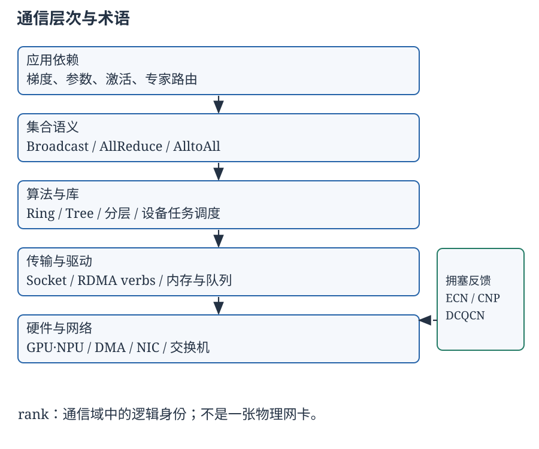
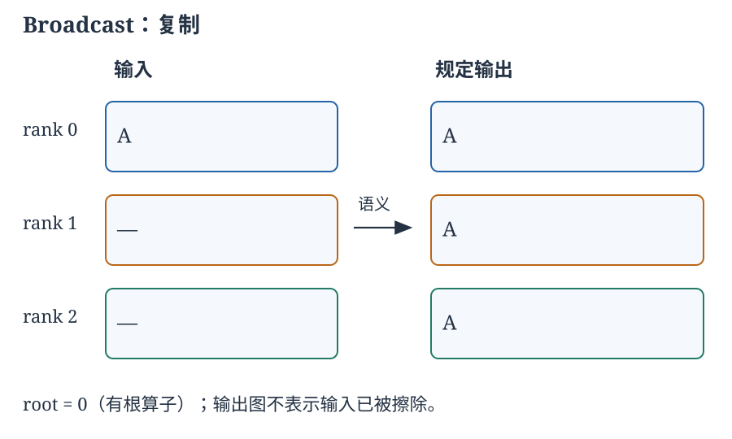
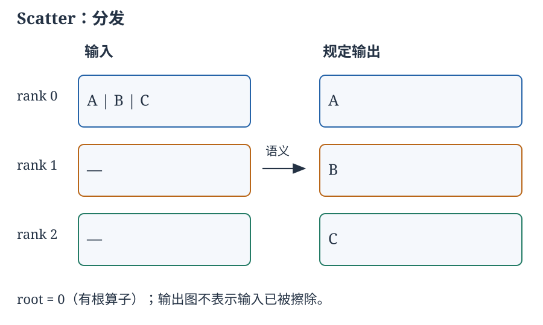
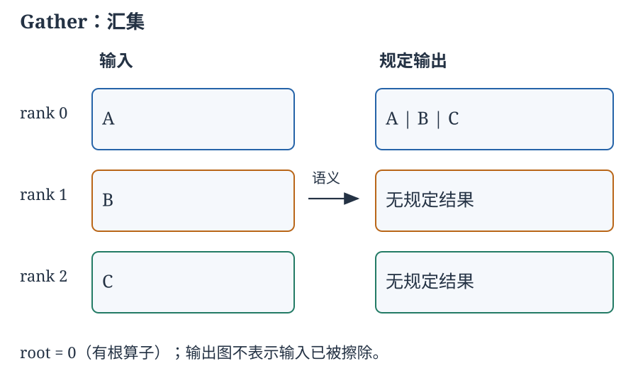
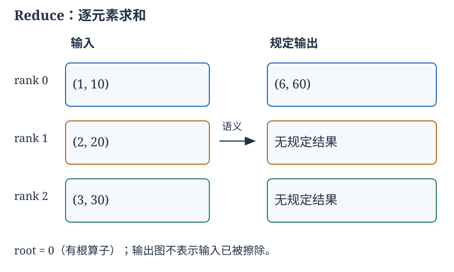
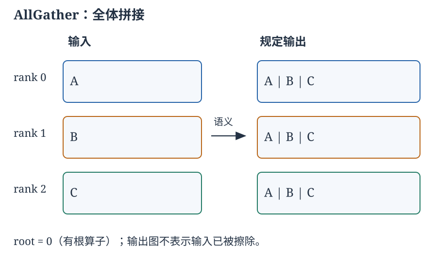
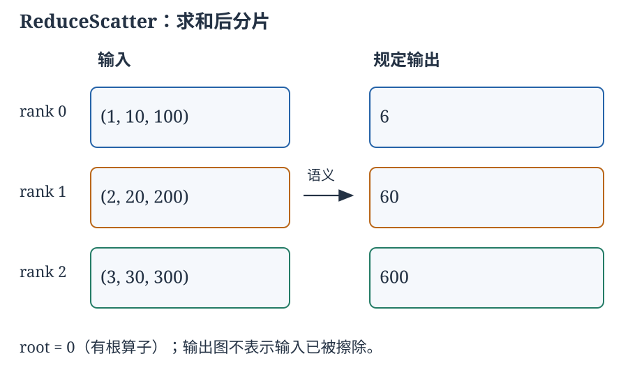
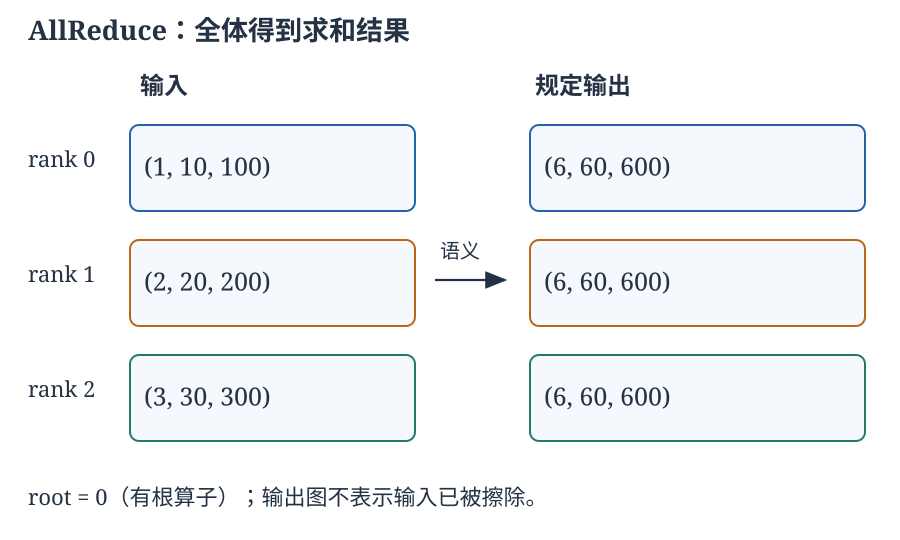
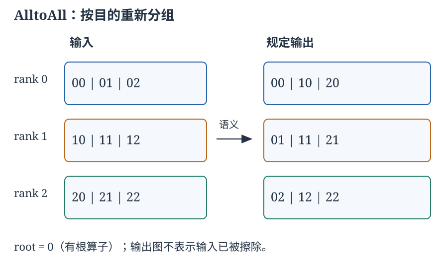

术语对应表
本篇用“集合通信”对应 collective communication；“归约”是按元素合并，不是拼接或数据压缩。同名 rank、ring、channel 在不同层次含义不同，以下约定贯穿正文。
| 英文／缩写 | 本篇用语 | 所在层次与区别 |
|---|---|---|
| collective / xCCL | 集合通信／集合通信库家族 | xCCL 不是一个统一库或线缆协议 |
| rank / root | 参与者编号／根参与者 | communicator 内的逻辑编号，不是主机号或 GPU 硬件编号 |
| communicator | 通信域 | 定义参与者及通信上下文，不是物理网络 |
| tensor / chunk / slice | 张量／分块／片段 | 算子输入、调度单位与流水单位不必同大 |
| Broadcast / Scatter | 广播／分发 | 同一块复制给全体／不同块分给不同 rank |
| Gather / AllGather | 汇集／全汇集 | 拼接仅存于 root／拼接存于每个 rank |
| Reduce / AllReduce | 归约／全归约 | 按元素合并，仅 root／全体得到结果 |
| ReduceScatter | 归约分发 | 先按元素归约，再由各 rank 持有不同结果分块 |
| AlltoAll / AlltoAllv | 全交换／变长全交换 | 每个源给每个目的不同块；v 表示可变计数 |
| Barrier | 屏障 | 参与者同步，不自动产生张量归约或数据布局变换 |
| ring / tree | 环／树 | 通信算法的逻辑图，未必是物理布线 |
| HCCL / HCOMM | 华为集合通信库／通信基础库 | 算子、选择与执行／通信域、拓扑和基础资源 |
| RHD / H-D_R | Recursive Halving-Doubling／旧配置别名 | 递归折半—倍增；非二次幂有附加工作 |
| NHR / NB | Nonuniform Hierarchical Ring／Nonuniform Bruck | 非均衡层次环／非均匀 Bruck；不是普通环或 nonblocking |
| AHC / NHR-HCF | Asymmetric Hierarchical Concatenate／NHR Highest Common Factor | 非对称层次拼接／按 Server 数最大公约数重组 |
| CP（HCCL 支持表） | 保留 CP；条目未展开全称 | Atlas A2 单算子 AlltoAllV 的算法名，不是 DCQCN 的拥塞点 |
| CCU / AIV / AICPU_TS | 集合通信单元／向量核／AICPU 与任务调度器 | HCCL 文档的不同通信执行路线，产品与资源条件不同 |
| recursive doubling / halving | 递归倍增／递归折半 | 每轮已知贡献集合扩张／负责的数据范围缩小 |
| channel / multi-rail | 通信通道／多轨网络 | 库调度通道／多条物理网络路径，不能等同 |
| latency / bandwidth / goodput | 时延／带宽／有效吞吐量 | 完成所需时间／链路能力／单位时间有效载荷 |
| bisection bandwidth | 对分带宽 | 网络被划分为两半后的跨割容量，取决于切分与拓扑 |
| data / tensor / pipeline / expert parallelism | 数据／张量／流水线／专家并行 | 划分训练样本／张量运算／层／专家，产生不同通信 |
| PCIe / NVLink / NVSwitch / xGMI | 保留原名 | 主机 I/O 互连／NVIDIA GPU 互连与交换／AMD GPU 互连 |
| NUMA / HBM | 非一致内存访问／高带宽内存 | CPU—内存局部性／常见 GPU 存储技术 |
| DMA / IOVA / IOMMU | 直接内存访问／I/O 虚拟地址／I/O 内存管理单元 | DMA 仍搬数据；设备地址不必等于 CPU 物理地址 |
| cache / buffer | 高速缓存／缓冲区 | 硬件 cache 与软件数据存储区域不可混称 |
| descriptor / doorbell | 描述符／门铃 | 工作参数／通知设备有新工作，不是有效载荷 |
| Socket / NAPI / skb | 套接字／NAPI／套接字缓冲对象 | 内核 API／事件处理机制／内核包元数据结构 |
| DPDK / EAL / PMD | 数据平面开发工具包／环境抽象层／轮询模式驱动 | 用户态包处理框架、资源初始化与设备快路径 |
| UIO / VFIO | 用户空间 I/O／VFIO | 设备访问框架；DMA 隔离能力不同 |
| XDP / eBPF / AF_XDP | 快速数据路径／扩展 BPF／AF_XDP | 接收钩子、受约束程序机制与用户态包接口 |
| UMEM / FILL ring | 用户共享包内存／补充环 | AF_XDP 数据区域／把可接收帧的所有权交给内核 |
| RDMA / RNIC / HCA | 远程直接内存访问／RDMA 网卡／主机通道适配器 | 内存访问能力、执行硬件与 InfiniBand 体系称谓 |
| InfiniBand / RoCEv2 / iWARP | 保留原名 | 三类 RDMA 协议承载，不是三种集合算子 |
| verbs / provider | 保留 verbs／设备提供层 | RDMA 操作接口／厂商实现适配层 |
| PD / MR / lkey / rkey | 保护域／注册内存区域／本地键／远程键 | 权限与映射；key 不是链路加密密钥 |
| QP / SQ / RQ | 队列对／发送工作队列／接收工作队列 | SQ 也承载 Read、Write 等请求 |
| WR / WQE / WC / CQE | 工作请求／工作队列元素／工作完成／完成队列元素 | API 表示／设备表示；完成信息不是收到业务结果 |
| CQ / RC / UC / UD | 完成队列／可靠连接／不可靠连接／不可靠数据报 | 队列与三类传输服务，不能把 RC 当成 TCP |
| GPUDirect RDMA | 保留原名 | RNIC 直接访问 GPU 内存的数据路径，不是集合算法 |
| incast / head-of-line blocking | 多对一汇聚／队头阻塞 | 突发扇入／一个拥塞流阻碍同队列其他流 |
| PFC / ECN / CNP | 优先级流控／显式拥塞通知／拥塞通知报文 | 逐跳暂停／IP 标记／接收端返回的 RoCE 通知 |
| DCQCN / CP / NP / RP | 数据中心 QCN／拥塞点／通知点／反应点 | 交换机标记、接收 RNIC 反馈、发送 RNIC 调速 |
| current rate / target rate | 当前速率／目标速率 | 实际限速值／恢复状态变量，不是保证获得的容量 |
| RED / headroom | 随机早期检测／预留缓冲余量 | 概率标记策略／PAUSE 生效前吸收在途数据的空间 |
1. 专题大纲与通信层次
分布式训练中的一个 AllReduce 调用，表面上只是把多张 GPU 的梯度相加，实际却同时涉及张量布局、参与者顺序、GPU 内核、设备互连、网卡队列和交换机反馈。高性能通信的核心不是寻找一个“最快协议”，而是让这些层次对同一条数据依赖协同工作：哪些数据必须移动，哪些可以先在本地合并，哪条资源限制了进度，以及拥塞发生后谁能够改变发送行为。
xCCL 综述把面向深度学习的多种集合通信库统称为 xCCL，包括 NCCL、RCCL、oneCCL、Gloo、MSCCL 和 Alibaba ACCL。[1] 这个称谓不是一个统一实现，也不是 RDMA 的别名。集合算子定义结果应当在哪里、是什么；通信算法安排各个时刻谁向谁发送哪些分块；传输与驱动决定这些发送如何成为设备工作；网络控制决定共享资源不足时怎样调整速率。同一个 AllReduce 可以采用不同算法，也可以运行在不同传输之上。

1.1 阅读大纲
| 顺序 | 主题 | 贯穿的问题 |
|---|---|---|
| 第 2 章 | Broadcast、Scatter、Gather、Reduce | 复制、分发、拼接、合并有什么不同？ |
| 第 3 章 | AllGather、ReduceScatter、AllReduce、AlltoAll(v) | “全体得到结果”是否意味着每人得到相同结果？ |
| 第 4 章 | Ring、Tree、递归倍增／折半 | 启动轮次、字节数与归约量分别如何增长？ |
| 第 5 章 | 分层、多轨与跨域 | 如何利用快的机内互连，减少慢路径上的工作？ |
| 第 6 章 | 数据、张量、流水线、专家并行 | 模型布局如何决定集合通信需求？ |
| 第 7 章 | 六类 xCCL 与调度架构 | 库怎样把语义映射到设备与网络？ |
| 第 8 章 | HCCL、RHD、NHR、NB、AHC | 国内文档中的简称对应哪些算法机制？ |
| 第 9 章 | DMA、PCIe、NUMA、GPU 互连 | 数据离开计算单元后经过了哪些瓶颈？ |
| 第 10 章 | Socket、DPDK、XDP／AF_XDP | “绕过内核”到底绕过了哪些工作？ |
| 第 11 章 | RDMA 的资源、驱动和操作 | 注册内存如何被设备安全访问，完成如何被确认？ |
| 第 12 章 | 队列、incast、PFC、ECN | 无损为什么不等于无拥塞？ |
| 第 13 章 | DCQCN 算法、参数与证据 | 标记如何变成减速，减速后又如何恢复？ |
| 第 14 章 | 指标与归因 | 一个快的微基准为什么不保证训练快？ |
1.2 一个通信域，不是一张物理网
设通信域有 p 个 rank，编号为 0 到 p−1。rank 是通信域内的逻辑身份；一个进程可以控制一个或多个设备，一个主机可以包含多个 rank。root 是某个 rank，不是自动取 GPU 的物理编号。改变 rank 与设备的映射，一方面改变 Scatter、Gather 等算子的块位置，另一方面也改变逻辑通信边在真实拓扑上的路径。[4]
本篇图示采用少量 rank 以展示语义。算子的“操作后”只表示规定的接收结果，不表示原来的输入缓冲被擦除。箭头若表示实际调度，会另外注明算法和轮次。这个区别很重要：在 Reduce 的语义图里把输入画到 root，并不能据此认定实现一定让 root 接收所有原始数据。
1.3 性能目标不是单个数字
小消息往往受调用、同步和启动时间限制，大消息往往受数据移动限制，多参与者任务还会受拓扑和同步尾部影响。应用的目标可能是降低一步训练时间、减少通信占用的 CPU 核、控制尾时延，或提高并发作业的总吞吐量。这些目标不总是一致。扩大并发通道可以提高链路利用率，也可能争抢 GPU 执行资源或制造更强的网络突发。
接下来的论述先建立可以核对的算子契约，再推导算法资源需求，最后解释驱动和拥塞控制。这样，一个“通信慢”的现象才能被分解成布局、调度、主机数据路径和网络反馈几个不同问题，而不把所有延迟都归咎于网线。
2. 有根集合算子：复制、分发、汇集与归约
本章用 root=0、三个 rank 描述四个基础算子。设每个小块有 b 个元素，类型和块内布局已约定。集合操作需要参与者在同一通信域上形成相匹配的调用；不同 API 对 count 的含义有所区别。NCCL 的类型与计数契约不能简单替换成 MPI 的派生类型和类型签名规则。[4][5][15]
2.1 Broadcast：同一份数据的复制
Broadcast 的输入是 root 上长度为 b 的向量 x，输出是每个 rank 上的同一向量。它不划分工作，不合并各 rank 的输入，也不为每个目的地生成不同数据。

例如，模型初始化参数由某个 rank 生成，其他副本需要相同起点，就可以用 Broadcast 传播参数。若 root 逐个发送，会在单个出口重复注入数据；树形算法让已收到数据的 rank 继续转发，减少传播轮次。但算子本身只承诺结果相同，不承诺具体轮数或物理链路流量。NCCL 2.28.3 的 ncclBroadcast 中 count 是每个 rank 接收的元素数，root 的 send buffer 才是有效输入。[5]
2.2 Scatter：把不同块分给不同参与者
root 持有按 rank 顺序排列的 p 个块 [x₀ | x₁ | … | xₚ₋₁]，每块 b 个元素。Scatter 的输出是在 rank i 上得到 xᵢ；root 自己也得到属于它的那块。root 的总输入是 pb，而不是 b。

若 A、B、C 是不同数据批次，Scatter 能使各 rank 只获得自己的批次。用 Broadcast 先复制全部批次再在本地挑选，也可能生成相同有效输入，但会额外占用接收容量和通信资源；这不是 Scatter 的等成本实现。另一方面，实际训练常由每个 rank 自行读取分片数据，不必真的把全部训练样本先放到 root。算子的教学用途与框架实际输入流水线应分开。
在 ncclScatter 中，count=b，root 至少提供 pb 个元素，非 root 的发送指针不作为输入。[5] MPI_Scatter 的发送计数也是给每个目的地的数量，而不是根缓冲的总元素数；不过 MPI 还允许以类型签名描述布局，这不意味着 NCCL 也有相同类型系统。[15]
2.3 Gather：保留各块，按 rank 汇集
每个 rank i 输入 xᵢ，root 接收按 rank 顺序的拼接结果。它不对相同位置的数字做运算。

例如，三个 rank 各输出两条预测，Gather 后 root 得到六条按 rank 分组的预测。若先对预测相加，就会丢掉逐样本身份，变成另一个问题。Gather 的“先后顺序”指最终布局按 rank 排列，不要求报文在网络上按这个顺序到达。接收侧可以把不同来源直接放入不同偏移位置。
Scatter 和 Gather 在布局意义上相反，但不互为任意程序状态的逆操作：谁拥有缓冲、是否别名、其他 rank 原有数据是否保留，都不是这个口头关系所完整描述的内容。ncclGather 的 count=b，root 的接收空间至少为 pb 个元素。[5]
2.4 Reduce：按相同位置合并，而不是拼接
设每个 rank 输入长度为 b 的向量 xᵢ，归约运算为 ⊕。Reduce 把相同位置的值合并，只在 root 的接收缓冲留下长度为 b 的结果。

求和、最小值、最大值都是常见归约。归约可以在中间节点先合并，root 不必接收每份原始数据：这正是它和 Gather 在通信组织上的重要区别。运算允许怎样重排则受代数性质和 API 支持约束。结合律允许改变括号；交换律还允许改变参与者顺序。非交换但结合的运算不能随意套用会重排来源的算法。
浮点加法在实际舍入运算下不满足严格结合律。以足够大的正数、其相反数和一个小数为例，先抵消大数与先把小数加到大数，可能得到不同结果。因此，数学上的“等价归约”不自动意味着不同环、树或分层方案产生位级相同结果。NCCL 的预定义运算、数据类型和缩放接口也不等同于“任意用户函数都可作为归约”。[4][5]
2.5 四个算子的容量区别
| 算子 | 有效输入 | 规定接收结果 | 是否按元素合并 |
|---|---|---|---|
| Broadcast | root：b | 每个 rank：b，同一块 | 否 |
| Scatter | root：pb | 每个 rank：b，不同块 | 否 |
| Gather | 每个 rank：b | root：pb，按 rank 拼接 | 否 |
| Reduce | 每个 rank：b | root：b，按位置归约 | 是 |
这些数字是有效元素容量，不是实际显存分配量，也不是线上报文字节数。类型宽度把元素数转换成有效载荷字节；临时空间、对齐、协议头、转发和流水线缓冲，还会进一步改变存储与通信成本。
3. 全体集合算子与语义组合
“All”意味着输出分布涉及全体参与者，但不意味着所有人总得到相同内容。AllGather 和 AllReduce 的结果在各 rank 相同；ReduceScatter 和 AlltoAll 则让各 rank 得到不同的数据。判断算子，首先应明确数据的身份是否保留、是否归约，以及输出如何分布。[1][4]
3.1 AllGather：每人都得到按 rank 拼接的全部块
rank i 输入长度为 b 的 xᵢ，每个 rank 都接收 [x₀ | … | xₚ₋₁]，长度 pb。它可以在语义上理解为 Gather 后 Broadcast，但实现通常不需要一个 root 持有并转发全部数据。

例如，模型参数分别分片存于各 GPU，而一个计算阶段需要完整参数，就可以通过 AllGather 恢复全量视图。每个 rank 的接收容量从 b 增至 pb，通信成功并不等于显存足够；多个计算层提前汇集参数还会拉长全量参数的驻留时间。NCCL 的 ncclAllGather 参数名是 sendcount：传入 b 时，接收缓冲仍须容纳 pb 个元素。[5]
3.2 ReduceScatter：归约后，各自拥有不同结果块
每个 rank 输入一个长度 pb 的向量，分为 p 块。先对各输入相同位置归约，得到一个长度 pb 的结果 y；rank i 只接收 y 的第 i 块，长度 b。输入已经按块排列，不意味着先把原始块发给对应 rank 就结束；每个结果块都必须包含全部 rank 的贡献。

这个三元素算例中，输入是 (1,10,100)、(2,20,200)、(3,30,300)，全归约结果是 (6,60,600)。ReduceScatter 分别把 6、60、600 留在 rank 0、1、2。它适合下游本来就按块更新状态的任务：没有必要先让每个 rank 保存全部结果，再丢弃其中大部分。
ncclReduceScatter 的 recvcount=b，发送缓冲要有 pb 个元素；MPI 的相关接口还区分等块与可变块计数。不能把所有库中名字相近的 ReduceScatter 都理解成相同的变长接口。[5]
3.3 AllReduce：每个人得到完整归约结果
每个 rank 输入长度 n 的向量；所有 rank 接收长度 n 的相同归约结果。沿用上例，每人都得到 (6,60,600)。

它有两种重要的语义分解：[4]
这里的等价要求归约操作、参与者和分块顺序一致；浮点数仍存在上一章讨论的重排差异。第二种分解把结果所有权分散到各 rank，让不同 rank 同时完成不同结果块，因此特别适合环形和分层算法。语义分解不要求 API 真调用两次，也不保证分开的两次调用与融合实现有相同启动成本。
求和 AllReduce 本身不一定等于训练所需的平均梯度。若各 rank 批量相等并计算局部平均梯度，结果再除以 p 才得到全局平均；若批量不同，必须按样本数加权。某些接口支持平均或预缩放语义，但缩放应以实际使用的 API 为准，而不是由 AllReduce 这个名字推断。[5]
3.4 AlltoAll：把按目的排列的数据转成按来源排列
设 rank i 有 p 块，块 xᵢⱼ 要送给 rank j。操作后 rank j 接收 [x₀ⱼ | x₁ⱼ | … | xₚ₋₁,ⱼ]。如果把每个 rank 的发送块画成矩阵一行，通信后的布局就是把“源—目的”矩阵按列交给各目的 rank。它是分布式数据重排，不是对矩阵数值执行线性代数转置内核。[4]

每个 rank 的总输入和输出都为 pb，但线上实际远程发送只有其中的 (p−1)b 个元素，本地块无需穿越网卡。与 AllGather 相比，它并不让每个目的地持有同一套块；与 ReduceScatter 相比，它不把来自多个源的数值合并。专家并行中的 token 路由和某些张量布局转换正需要这种保留身份的重排。
AlltoAllv 允许源 i 发给目的 j 的块有不同长度 cᵢⱼ。接收端必须知道对应来源的计数与偏移，并与发送端达成一致。长度交换、打包、位移计算和输出重建都可能产生额外成本。若某个目的地收到的总字节数特别大，平均计数就掩盖了真正的尾部瓶颈。NCCL 2.28.3 文档中的 ncclAlltoAll 是等长 count 接口，不因名字带有 All 就自动提供 AlltoAllv。[5]
3.5 屏障和点对点不是“更简单的 AllReduce”
Barrier 只建立参与者同步条件，不生成新的张量结果。集体算子完成也不应被当作任意其他 stream 或 CPU 任务的全局屏障：数据依赖还取决于执行上下文。Send／Receive 则针对指定对端搬运数据，可以组成 Scatter 或全交换的调度，但还要处理匹配、顺序、并发和错误。算子表达的是整体契约，点对点表达的是构造契约的局部动作。
Scan 是前缀归约：rank i 只得到从 rank 0 到 i 的贡献合并，因此各 rank 结果一般不同；它既不是全体相同结果的 AllReduce，也不是把完整结果等分的 ReduceScatter。xCCL 综述在支持表中列出 Scan，但未展开算法，也没有由此证明所列库均支持它。[1]（表1）
| 算子 | 每 rank 输入 | 每 rank 规定输出 | 数值合并 | 最终各 rank 相同？ |
|---|---|---|---|---|
| AllGather | b | pb | 否 | 是 |
| ReduceScatter | pb | b | 是 | 否，结果分块不同 |
| AllReduce | n | n | 是 | 是 |
| AlltoAll | pb | pb | 否 | 通常不同 |
这里把 n 与 b 分开，是为了避免常见的成本混淆：AllReduce 的 n 是每个 rank 的完整向量长度，AllGather 的 b 是每个 rank 的独立输入块长度。两者不能仅凭“相同 count 数字”就判断通信量相同。
4. 从算子语义到通信算法
同一个 AllReduce 可以用环、树或递归交换完成。它们不改变所需结果，却改变消息数量、每轮数据量、并发对象与归约次序。算法选择首先是资源分配问题：少轮数是否以更多连接换来，少字节是否增加同步，逻辑邻居是否挤在同一物理上行口。[1]（§4）
本章用统一模型讨论这些变化。设参与者为 ，最终完整向量大小为 字节；AllGather 中它是所有输入块之和，AllReduce 中它是每个 rank 的完整输入／输出大小。 是一轮消息启动时间， 是每字节传输时间， 是每字节本地归约时间，后二者单位均为秒／字节。一次收发按可重叠的全双工交换计费，而不是把发送和接收字节再次相加。模型忽略拥塞、进程偏斜、分包及真实协议开销；不适用于把所有并发连接当成各自独享同一端口带宽的情形。
环：把完整向量变成持续流动的分块
Ring AllGather 将 rank 排成逻辑环，每个 rank 首先发送自己的块，随后转发上一轮收到的块。经过 轮，所有 rank 都拥有全部块。每轮传输 字节，因此单 rank 的发送总量为完整结果的 ，而不是每轮都发送一个完整向量。
Ring AllReduce 再加一个 ReduceScatter 阶段。每个块沿环传播时，收到该块的 rank 把本地同位置输入归约进去；第一阶段结束后，每块都纳入全部 rank 的贡献，但分别归属于不同 rank。第二阶段只复制这些已完成的块，不能再次归约，否则会重复计入贡献。两阶段各需 轮。[1]（§4.1.1）

图中的块标签表示数据归属，不指定某个库的精确块编号。内部 ReduceScatter 的归属可以置换；只要随后 AllGather 恢复完整向量及正确位置，AllReduce 的外部语义仍成立。独立调用 ReduceScatter 时则必须遵守 rank 到输出块的映射。
发送量渐近接近每 rank 两个完整向量，启动项却随规模线性增长。因此“带宽效率好”与“规模大时延迟低”是不同评价。环的单邻居通信也不保证物理网络无拥塞：多条逻辑环可能共享同一条上行链路。
二项树：用更多传播者减少轮数
Broadcast 的直接根发送把全部出口工作集中在 root；二项树让收到数据的 rank 成为新的传播者。以 8 个 rank、root 0 为例，一种等价调度先执行 0→4，再执行 0→2、4→6，最后执行 0→1、2→3、4→5、6→7。轮末持有完整消息的 rank 数依次为 2、4、8。逻辑边表示传输任务，不意味着机器必须按树形布线。

在 、每轮发送完整 字节的简化模型中，关键路径经过 轮，所以广播成本为 。Reduce 沿反向边汇合，每轮增加相应归约成本，得到 。[1]（§4.1.2）
短消息受启动项支配，减少轮数很有吸引力；长向量却会在关键路径上反复传输完整消息。分段流水可以改善带宽利用，但引入段启动、管线填充与排空，不再等于上述未分段成本式。非交换归约还要维护操作数顺序，不能任意反转或重排树边。
双二叉树：分担转发负荷
NCCL 2.4 的双树设计把数据分成两部分，在两棵尽量互补的二叉树上执行归约与分发。某 rank 在一棵树中承担内部转发，在另一棵树中尽量作为叶子，从而分散单树内部节点的额外发送负荷，同时保留对数级树深。[7]（Double binary trees）
互补关系并不是“每个 rank 永远恰有两个父节点和两个子节点”。根、叶以及奇数规模构造都有例外。它也不是物理网络增加一倍：两棵逻辑树仍受同一设备端口、路径与内存带宽约束。厂商报告的规模化收益说明该设计在其测试条件下改善了延迟，不能外推到任意拓扑或把 NCCL 2.4 的介绍当成所有后来版本的算法清单。
递归倍增：每轮扩大已知集合
在 的 AllGather 中，rank 可按二进制位选择伙伴：第 轮与编号异或 的 rank 交换。第一轮双方各有一个块，交换后各有两个；下一轮交换两个块，得到四个。各轮已知集合互不重叠，最终覆盖全通信域。
这给出 。它与环的发送总量相同，轮数更少，但每轮伙伴发生变化，后期消息更大。[1]（§4.1.3）
AllReduce 的“完整向量递归倍增”是另一种负载：每轮交换完整向量，并把两个互不重叠 rank 集合的归约结果合并。交换大小不随轮次增长，始终是 ；已归约的贡献集合增长。因此成本是 ，不能套用 AllGather 的几何和。短消息可能受益于少轮数，长向量则支付更多重复传输。
递归折半：只保留最终归自己的一半
ReduceScatter 反向收缩数据责任范围。初始每个 rank 都有完整输入；第一轮按最终所有者分成左右半区，与另一半 rank 集合中的伙伴交换：把不归本子组的半向量发送出去，把收到的本半区与本地半区归约。下一轮在各自子组中再次折半。贡献集合逐轮扩大，仍需保留的数据范围逐轮缩小。

对于 4 rank，可先配对 0↔2、1↔3，保留各自半区，再配对 0↔1、2↔3，保留各自四分之一区。每轮交换量为 ，其和也是 。反向执行 AllGather，每轮拼回一个更大的区间，就得到折半—倍增 AllReduce：
上述伙伴顺序保留输出块的 rank 顺序；另一些实现使用“向量折半、距离倍增”，减少某层网络的流量，却产生中间块置换。内部 AllReduce 可容许置换，公开 ReduceScatter 则要还原正确所有者。交换型归约容许更灵活的贡献重排；非交换型归约需要额外的顺序约束。[1]（§§4.1.3–4.1.4）[16]（RHD）
非二次幂：折叠不是免费操作
若 不是二次幂，直接异或可能产生域外编号。令 。一种 AllReduce 调度先让 对 rank 合并输入，保留 个活动代表；代表完成二次幂算法后，再把结果还给暂时不活跃的伙伴。5 rank 就可以先把 rank 1 的输入并入 rank 0，四个代表完成归约，再由 0 把结果传给 1。[16]（RHD）
这增加完整向量的预归约和结果回传，还改变逻辑编号映射。因此 5 个参与者不能直接把四 rank 式中的 换成向上取整就算完。Binary Blocks 则把规模分成若干二次幂块，在块内及块间组织合并；它处理的是不规则规模，不是不同数据类型。[1]（表2） 本篇不把这类方案的不同具体块间调度压成一个通用成本式。
其余经典方案：交换轮次、聚合和代数约束
Bruck 的核心是重排／聚合，使一个阶段搬运多个目的地或来源的数据，再通过后续阶段转发。用于 AllGather 时，已知块集合按对数阶段扩展，能处理非二次幂规模；用于 AlltoAll 时，聚合不同目的地的小块，减少小消息的启动次数，却增加本地整理和部分数据的中继。这解释了它为何常用于短消息，而非“对数轮算法在所有消息长度都更好”。本篇沿用综述的算法分类，不将 MPI Bruck 的每项实现细节直接归给 HCCL NB。[1]（表2）
Isend–Irecv AlltoAll 为各对端预投递非阻塞收发，再等待匹配完成。它暴露了并行机会，也暴露队列、临时资源和同端口多流竞争。Pairwise Exchange 把交换排成轮次，第 轮 rank 向 发送，从 接收。每轮一个发送对象和一个接收对象，经过 轮覆盖非本地交换。该模运算教学调度本身不要求二次幂规模；综述表中个别 Pairwise 的规模条件属于其引用的具体方案。[1]（表2）[16]（Pairwise）
Van de Geijn Broadcast 先 Scatter，再 AllGather：root 不必在树的每一层发送完整长向量，各 rank 先得到一片，再合作复制。Rabenseifner 的归约方案同样通过分片减少长向量的反复传输：AllReduce 常由 ReduceScatter 与 AllGather 组成；有根 Reduce 则把已归约片段 Gather 到 root。Vector Halving／Distance Doubling 描述的是向量范围与伙伴距离的演化方向，而非一个新算子。
ReduceScatter 的经典方案还包括递归倍增、逐对交换，以及先二项树归约再 Linear Scatterv。不同方案对非交换归约、用户自定义操作和变长块的处理不同；维护代数顺序可能比减少字节更重要。Scatterv 的 v 指发送块长度可变，不是向量化指令。[1]（表2、§4.1）
分块、多通道与 All-Pairs
Gloo 的 Ring-Chunked 把缓冲区细分，传输一块时归约另一块，缩短“等待完整数据再计算”的空档。分块粒度太小会增加调度与协议开销，太大则难以重叠。NCCL 与 MSCCL 也采用分块和通道，但逻辑 ring、软件 channel、GPU 执行资源以及 NIC 物理端口不是同一个对象。多个 channel 可以提高并发，也可能争用同一出口。[1]（§§4.2.1–4.2.3）
MSCCL 的 All-Pairs 则让不同 rank 承担不同结果片：先从各贡献者收到对应片并归约，再把完成片发给所有 rank。抽象上是两个通信阶段，相比长环减少依赖深度；若各连接共享单一端口，两个阶段并不等于两次单消息成本。输入、输出、scratch 三类缓冲区承载不同生命周期，短消息优势以连接并发、临时空间及任务编排为代价。综述此段文字将一个阶段描述误称为 Ring；这里按它明确对比的 All-Pairs 两阶段机制解释，而不据此声称二者相同。[1]（§4.2.2）
分层家族：相同等式，不同拼接方式
MSCCL Hierarchical 使用节点内 ReduceScatter、节点间 ReduceScatter、节点间 AllGather、节点内 AllGather；中间两步合起来是代表组的 AllReduce。ACCL Hybrid 则明确用节点内 Ring、节点间 Halving-Doubling，再节点内 Ring AllGather。Gloo BCube 也先组内分片归约，再对应代表跨组归约，最后组内拼接。它们共同把大量搬移留在较快的局部网络，但不代表选择器、分组规则或执行资源相同。[1]（§§4.2.2–4.2.4）
MSCCL Two-Step AlltoAll 面对的是跨节点大量小块：先按目的节点聚合，再跨节点传输及分发。它减少消息数量，不减少必须交付的有效载荷；额外本地拷贝与整理若超过节约的启动成本，收益会消失。Gloo 的 Pairwise-Exchange 是其文中用于基准的配对交换方案，不能仅凭同名就视为 HCCL 的完整 AlltoAll 实现。具体分层与拓扑约束将在下一章展开。
成本式为什么不是选择器
环与折半—倍增在理想模型中具有相同的带宽项，后者的启动项更小；真实库仍然可能选择环。这不是模型与实现矛盾，而是模型把不同连接、不同路径以及不同消息聚合的 视为相同。连续收发的环可能更易稳定利用链路，递归交换则会改变目的地，遇到拓扑不匹配或同步成本。反过来，小消息无法摊薄长环的启动成本，树或对数轮交换便可能占优。
xCCL 综述表 2 中的 32 B、2 KB、32 KB、512 KB 等分界来自所引算法／实现的具体条件；表内同一算法在正文还有不同示例阈值。它们说明存在选择边界，不构成所有设备共用的调参表。[1]（表2、§4） HCCL 中的 RHD、NHR、NB 与 AHC 也在优化这些量，但名称相近不等于调度相同；第 8 章将按其归档文档展开。
5. 跨节点、跨网络与分层通信
逻辑上相邻的两个 rank，可能由同一芯片互连、PCIe、机架交换机或跨区域链路连接。算法轮数相同，成本仍会不同，因为不同层的链路带宽、共享程度和故障域不同。xCCL 综述的拓扑讨论针对物理网络；环和树算法则是叠加在其上的逻辑调度。[1]（§3）
五类拓扑及其约束
超立方体用二进制编号组织节点；完整 维结构有 个节点，每节点沿每一位连接一个邻居，度为 。递归异或交换与这种结构自然对应，但在普通交换网络上也可模拟该逻辑伙伴关系。路径选择和冗余有利于容错，不意味着节点失效后算子无需重建通信域。非完整立方体的调度与性能会改变。[1]（§3.1）
物理 Ring 每节点通常连接左右邻居，多跳距离随规模增长；逻辑 Ring 则可能通过交换机将任意两个设备安排为邻居。综述列出的“减少碰撞”等描述不能当成现代交换式以太网的通用原因：全双工交换链路本来不依靠共享介质碰撞机制。环调度仍会产生端口和路径争用。[1]（§3.2）
Torus 将环扩展到多个维度，并在维度边界回绕。各维度长度大于 2 时， 维节点通常有 个不同邻居。它用规则布局和多方向路径缩短距离；维度增加需要更多端口与布线，某维度增长仍增加该方向的跳数。Folded Torus 调整物理嵌入和线缆长度，不能自动消除逻辑拥塞。[1]（§3.3）
Fat-Tree 在靠近汇聚处提供更多聚合容量，避免所有叶子都争抢一根细上行。计算通常位于叶端，交换节点负责转发。实际集群常采用多级 Clos／leaf–spine，可能有多条等价路径，并非只有一条祖先路径的教科书树。全带宽设计需要足够上行口、交换容量和路由；采用收敛比大于 1 的部署仍会在跨组交换中受限。[1]（§3.4）
Dragonfly 将路由器组成组，组内连通、组间由全局链路连接，以组级高有效端口数支持较小跳数。它把本地与全局布线解耦，但特定流量矩阵仍可能集中占用少数全局链路。Dragonfly+ 用组内 Clos 式结构扩展组规模与路径选择；非最短路可以绕开热点，也会消耗额外路径容量。短直径不等于所有集合流量下都无阻塞。[1]（§3.5）

图只展示连接组织，不是具体产品布线图，也不按线条长度表达传播时延。决定性能的还包括链路容量、路径选择、注入速率和同时运行的其他作业。HCCL 文档中的 Full Mesh 强调卡间多链路直接互通；Star 是根节点辐射通信。两者又不同于把大量端点接入一个共享交换端口的“逻辑全连接”。
局部归约与跨节点分片
设有 台服务器，每台 个 rank，完整向量大小为 。分层 AllReduce 先在每台服务器内执行 ReduceScatter，使各本地 rank 持有 的局部归约片；再让同本地编号的 rank 组成 个跨服务器通信组，各组完成对应片的 AllReduce；最后每台服务器内 AllGather。[1]（§§4.2.2–4.2.4）[16]（分级通信原理）

以两个服务器、每台四卡为例，原本八个 rank 的贡献先合成两个服务器的局部结果，再按四个片段并行过网。每个跨服务器组处理四分之一向量，但四个组加起来仍覆盖整个向量。若它们共享一个 NIC，不能把总时间也直接除以四；若分别连接四个独立出口，才可能同时利用更多注入带宽。
在跨服务器阶段采用环、各代表组资源独立且大小均匀的模型中，单代表发送 字节。按服务器聚合是 。分层的价值不是凭空消除所有跨网流量，而是先合并同机贡献，并让分片与独立链路相匹配；与此同时增加局部通信、阶段同步和拓扑映射成本。
输出顺序限制了分层顺序
AllReduce 的内部片段可以置换，外部只观察最终完整结果；AllGather 与 ReduceScatter 却直接暴露 rank 对应的位置。以两台服务器、每台两卡为例，rank 顺序是 0、1、2、3。若先把同本地编号的 rank 做 AllGather，会得到组内序列 [0,2] 和 [1,3]；简单拼接成 [0,2,1,3] 就违背了外部语义。实现需要调整布局、使用步长拷贝，或选择有利于连续块的阶段顺序。
HCCL 的 Atlas A2 单算子分级说明给出 AllGather 先 Server 内、再 Server 间；ReduceScatter 则先 Server 间、再 Server 内，以维护连续块与所有者顺序。它的 Pipeline AllGather 采用另一种跨层重叠编排，不能由这张顺序阶段表直接推断全部实现均遵循相同次序。[16]（hierarchical_comm_principle、Pipeline）
有根算子也能分层。该文档的 Broadcast 使用 Server 内 Scatter、Server 间 Broadcast、Server 内 AllGather；Reduce 使用 Server 内 ReduceScatter、Server 间 Reduce、Server 内 Gather。最后的 Gather 是内部结果汇合，不意味着 HCCL 一定公开一个 Gather API。AlltoAll(v／VC) 也可在 Server 内整理后跨 Server 交换。这些分解成立的关键是 root、块位置与 rank 映射始终一致。
聚合与流水不是同一项优化
Two-Step AlltoAll 将发往同一服务器的小块合并。若原来有 条消息、整理后为 条，且有效载荷不变，理想启动节约是 ；本地打包／解包与额外内存流量要另计。AlltoAllv 下，不均匀的目的负载还会使某一服务器或端口成为瓶颈。[1]（§4.2.2）
Pipeline 则让一个块跨服务器转发时，另一个已到达块在服务器内分发。若每块两层服务时间分别为 、，两层资源真正独立、顺序块数为 ，两级流水的教学模型是 ，而串行模型为 。收益来自重叠，不来自把慢层带宽改快。共享 DMA／内存控制器、细粒度同步及不均匀块都会缩小收益。[16]（Pipeline）

从多网卡到跨区域
同号卡跨节点连接、multi-rail 与超级节点为分层提供了机会，但设备编号不是物理邻近性的证明。一个 GPU 到远端 NIC 的 PCIe 路径、跨 NUMA 访问、网卡绑定和交换机上行收敛都可能改变有效带宽。对通信组重新排序，是把算法流量映射到资源；它不能创造不存在的物理链路。
跨区域／广域网还带来更高 RTT、较高误码／丢包风险及管理边界。对一个单瓶颈割，若本次执行必须跨割交付 字节、可用速率为 字节／秒，则该执行的传输时间至少为 ，尚未计入不可隐藏的 RTT 和依赖等待。这里的 必须由实际分解与数据所有权决定，不是对所有算子的统一常数。区域内先合并贡献可能减少跨域输入数，但最终消费者仍需得到必要结果。本章解释的是分层原理，不把数据中心 RoCE 的无损部署条件推广到任意 WAN。
6. 训练依赖如何塑造通信
算子选择来自状态所有权与消费者需求，而不是模型名字。xCCL 综述通过四个工业案例说明训练与集合通信的联系；本章在此基础上按状态布局、重叠和压缩展开机制解释，因为通信发生在计算依赖图中。[1]（§5） 相同 AllReduce 微基准，放在不同依赖位置上，会产生不同的迭代影响。
数据并行：贡献集合和归一化
每个 rank 保存同一模型，对不同样本计算梯度。若各 rank 的样本数相同、本地梯度是该批样本的平均值，全局平均梯度可由求和 AllReduce 再除以 得到。若本地样本数不同，简单平均会改变样本权重：令 rank 的样本数为 、平均梯度为 ，正确的样本平均是：
通信库负责归约给定数值，不替训练框架判断梯度是否已缩放。初始化时的权重 Broadcast 使模型状态一致；每步的梯度归约则合并不同数据贡献，两者不能混为同一种“同步参数”。
分片、张量并行与专家路由
分片训练不必让每卡永远持有全部梯度和优化器状态。ReduceScatter 把已合并梯度留在对应所有者，局部更新后可以 AllGather 所需参数。它减少持久状态的复制，却引入参数物化、更多阶段及生命周期管理；峰值内存还包括临时全量参数、预取和通信缓冲区，不能只按参数量除以卡数。
张量并行将矩阵或激活划分给不同 rank。某层若各卡计算同一输出位置的部分和，需要 AllReduce；若后续只消费各自输出片，可以 ReduceScatter；若下一层需要完整输入，可能 AllGather。通信需求由分块维度与计算布局共同决定，而非“张量并行必用一种固定算子”。流水并行则在相邻阶段发送激活、反向发送梯度，点对点通信与微批流水泡沫同样影响利用率。这些分解是本篇依据算子语义给出的教学分析，不是某个框架的默认配置声明。
专家并行把词元路由到专家所在 rank，再将专家结果返回原消费者。不同目的地的词元数通常不同，因此 AlltoAllv 更符合变长交换语义；计数、打包、排列恢复以及容量限制都是有效载荷以外的工作。负载均衡不足时，最忙专家或其网络出口决定阶段完成时间。一次大规模 AlltoAll 的“全对全”目标也不意味着所有边必须同一瞬间发送。
重叠的前提是数据已就绪且资源可并行
反向传播从末层向前推进，已完成梯度可按 bucket 发起归约，同时继续计算更前层。通信并不必须等全部梯度完成，但优化器也不能在所需结果尚未完成时读取。过细 bucket 增加启动次数，过粗 bucket 推迟首次通信；两者之间的选择取决于梯度就绪节奏与链路服务时间。这是本篇按依赖图给出的重叠模型。

图中隐藏的是与独立计算重叠的通信部分，迭代尾部仍有不可隐藏的等待。若通信 kernel 争用计算核、显存带宽或 PCIe，重叠也可能使计算变慢。因此总时间不是简单把计算时间和通信时间取最大值；取最大值只在资源独立、依赖允许完全重叠的理想条件下近似成立，一般不能作为总时间的上界。一次异步 API 返回同样不证明结果已经可消费。[6]
压缩改变的是数值与系统共同成本
稀疏化、量化或低秩表达可以减少传输字节，但要支付编码、解码、索引、误差反馈和临时状态成本。各 rank 的稀疏索引若不同，不能直接对压缩字节做普通逐元素求和；低精度归约还要处理溢出、缩放与误差积累。迭代时间下降不必然意味着达到目标精度所需的总训练时间下降。这里说明的是压缩的系统与数值约束，不对特定压缩方法给出未经实验的精度或加速保证。
工业案例中的通信对象
Meta 的推荐系统案例围绕 Neo：表、行、列与数据四维并行共同平衡嵌入负载，hybrid kernel fusion 将嵌入计算与参数更新融合，ZionEX 将硬件网络与这些布局协同设计。其另一个 ResNet-50 案例使用 32 节点、每节点 8 GPU，说明局部归约、跨节点通信和 CPU／GPU 工作分配共同影响扩展。[1]（§5.1） 按状态所有权看，dense 梯度与分片嵌入的交换模式不同，这也是本章区分 AllReduce 和路由型交换的原因。
Google 的案例从 DistBelief 到 TensorFlow，进一步讨论 CUDA-aware MPI、通信模式基准、RDMA-based gRPC 与 NCCL Fast Socket。它涉及多条通信后端演进路线，而非一个固定硬件上的统一算法；其中引述的 MPI 扩展效率也说明 GPU 训练与 MPI 并非互斥。[1]（§5.2）
Uber 的 Michelangelo／DSW 提供训练与部署平台，Horovod 将多种通信后端整合进用户流程。综述具体讲述以 NCCL 替换早期 ring-allreduce 实现，在其所引 VGG-16 条件下，RDMA 相比 TCP 带来约 30% 改善；该数字属于特定工作负载，不是任意 ring 或 RDMA 的收益常数。[1]（§5.3、§6.1.6）
Amazon 的 MiCS 案例针对云中节点内与节点间带宽差异，缩小分片通信参与范围，以分层 AllGather 和两跳梯度同步减轻慢链路压力。它同时改变状态分组与通信阶段，因此不能把文中相对 ZeRO 的 2.98 倍结果单独归因于某个 AllGather 算法。[1]（§5.4） 四个案例分别说明负载布局、后端选择、平台整合与慢链路分组，不能按公司名称排成统一速度榜。
7. xCCL 的架构、接口与比较
xCCL 是综述对一组工业集合通信库的称谓，不是统一接口标准。它们共同面向深度学习的数据搬移，却在设备、执行上下文、算法生成、通信后端和授权方式上形成不同边界。本章按 2023 年综述介绍六条设计路线；NCCL 接口的补充核对固定到 2.28.3，HCCL 则单列在下一章。[1]（§6）[4–6]
NCCL：通信域、stream 与设备执行
NCCL 通信域确定参与 rank 及其 CUDA 设备，初始化阶段交换身份并建立资源；算子调用指定缓冲区、类型、计数、归约操作和 stream。库根据拓扑与调用条件选择算法，把传输及归约任务排入设备执行上下文。节点内可利用 PCIe／NVLink 等路径，跨节点可使用网络后端和 GPUDirect RDMA；后者仍以平台与驱动支持为前提。[1]（§6.1）[8]
论文列出的 ncclCommInitRank、ncclCommInitRankConfig 与 ncclCommInitAll 为不同初始化场景提供入口；建立通信域后才执行算子。TensorFlow、PyTorch、Caffe、CNTK、MXNet 与 Horovod 等在论文时期通过各自适配层使用 NCCL，这说明生态整合，而不是所有框架今天仍具有相同默认后端。[1]（§§6.1.2–6.1.3）
stream 是顺序约束，不是额外网络端口。同 stream 上的生产计算先于通信，通信后面的消费者才可依赖其结果；跨 stream 需要事件等显式依赖。在一般异步调用中，CPU 返回表明任务已排入 stream，而非 GPU 结果可随意读取。非阻塞通信域、分组操作还有各自进度要求，不能只用“返回即完成”判断。[6]
下例是原创教学伪代码，不是上游源码，也不是可直接运行的完整训练程序。它只展示数据生命周期：
comm = 建立通信域(所有参与rank及设备)
在stream_C计算本地梯度
record(event_ready, stream_C)
wait(stream_N, event_ready)
在stream_N排入AllReduce(本地梯度 → 全局梯度)
record(event_done, stream_N)
wait(stream_C, event_done)
在stream_C读取归约结果并更新参数
LL、LL128、Simple 是 NCCL 的协议／同步粒度路线，不是 AllReduce 算法名。低延迟方案用较细粒度的就绪标记与数据组织降低等待，代价可能是有效载荷比例及带宽效率；较大消息更能摊薄 Simple 路线的开销。综述把 LL128 简写成“128 bytes atomic store”，这里不将整块 128 字节说成设备保证的一次通用原子存储；真正原子性与可见性要依赖实现和硬件语义。[1]（§6.1.4）
论文 2023 年支持表中 NCCL 不直接提供 Gather、Scatter、AlltoAll，训练示例用 Send／Recv 组合 Scatter。固定的 NCCL 2.28.3 API 已列出 ncclGather、ncclScatter、ncclAlltoAll，因此历史示例不能冒充当前缺失功能。[5] Barrier、Scan、任意变长或 MPI 派生类型也不能因为 API 风格相近而自动推定支持。接口名称、算法调度与设备可用性是三次不同核对。
oneCCL：通过后端与执行上下文适配异构设备
综述中的 oneCCL 面向 oneAPI 生态，将 Intel MPI／libfabric 等底层通信与 Level Zero 等设备能力结合。通信域区分 host 与 device 参与者，stream 传递执行上下文，event 表示异步操作状态；优先级字段提供调度提示。它把可移植的传输接口与设备专用执行结合起来，代价是后端、设备和事件语义需要一致配套。[1]（§§6.2.1–6.2.2）
论文列出的算子包括 AllGather(v)、AllReduce、AlltoAll(v)、Barrier、Broadcast、Reduce、ReduceScatter。PyTorch bindings 与 Horovod 集成让框架可选择该后端；框架支持不意味着所有设备具有相同快路径。本篇介绍的是该调查时期的能力，不依据品牌名假定所有 FPGA、CPU 和 GPU 都能共享任意通信域。[1]（§6.2.3）
ACCL：对异构互连作混合调度
Alibaba ACCL 面向多 fabric、multi-rail 以及节点内外带宽差异。文中以物理网络探测模型帮助选择 hybrid 算法：快局部网络上分片归约，慢跨节点网络上代表交换，再局部拼接。[1]（§6.3） 一个统一 ring 可能把快路径变成等待慢路径的串行链，分层因此改变关键路径。
其收益以拓扑建模准确、流量分配合理和额外阶段成本可摊薄为前提。论文时期 ACCL／AIACC 是专有体系；本篇没有据名称推断公开源码，也不把论文中 AIACC 的系统比较直接归因于 ACCL 单库。这里的 ACCL 明确指 Alibaba Collective Communication Library，而非其他同缩写的项目。
RCCL：API 相似不代表平台成本相同
RCCL 是 ROCm 的集合通信路线，与 NCCL 接口和环／树设计具有历史联系。综述用 CUDA 经 HIPify 转换为 HIP 的路径解释可移植性，提到 PCIe／xGMI、verbs 和 TCP/IP，以及 HIP stream 和 NPKit 跟踪。[1]（§6.4）
源码转换减少接口迁移工作，不消除设备原子操作、互连、调度器和内存一致性的差异。论文中的编译器和框架版本属于历史描述，不能据此声称当前 RCCL 可在任意 NVIDIA／AMD 混合域运行。MPI 可以承担多进程启动或通信协调，也不能简单等同于所有 RCCL 数据都经 MPI 搬运。
Gloo：建立连接与执行集合通信分开
Gloo 的 CPU 通信与 GPU 支持覆盖范围不同。rendezvous 通过共享键值存储交换对端地址和端口，或使用 MPI 进行协调；完成建链后，大块数据由所选 transport 传输，键值存储并不是每块数据必经的中转服务器。[1]（§6.5）
当一个进程拥有多个缓冲区，其文中 AllReduce 分三步：本地合并缓冲区、跨进程集合、再把结果传播回本地各缓冲区。中间可用 Ring、Ring-Chunked、Halving-Doubling、BCube；这与单个 GPU 直接加入通信域的布局不同。CPU-oriented 设计在 CPU 训练和协调中有用途，不能从 GPU 测试较慢就推断它在所有场景都多余。论文表 3 的 P2P 标记与 §6.5 对 CPU 点对点的描述口径不同，不能当作今天的统一否定。[1]
MSCCL：从块依赖图到可执行调度
MSCCL 将通信算法的表达与运行分开。GC3 提供块导向 DSL 和编译器；SCCL、TACCL 从拓扑及约束／communication sketch 合成调度。块程序说明某块从何处来到何处去，经 tracing 形成 chunk DAG；lowering 展开为指令 DAG，再将指令安排到 channel、thread block 及同步结构，生成运行时执行的中间表示。[1]（§6.6）

两种 DAG 不能合并成一个概念：前者表示数据依赖，后者还要表达传输、归约与同步指令。调度 directives 可以拆小传输以增加并行，或合并连续块减少启动；同一对 GPU 的多个 channel 也提供不同安排。改善某一依赖图会增加算法生成、拓扑适配和维护成本；机器配置变化后，已有调度不一定仍最优。
综述报告了 8×A100 语言模型推理及 256×A100 MoE 训练中的不同加速区间，且随 batch／模型结构变化。[1]（§6.6.4） 这些是所引系统的应用结果，不是本篇复现，也不是对任意 MSCCL kernel 的统一保证。NCCL-compatible API 有利于框架替换后端，但运行时兼容、算法覆盖与硬件版本仍需分别满足。
设备与授权也是库边界
论文时期的授权分类是 NCCL、RCCL、MSCCL 为 MIT，Gloo 为 BSD，oneCCL 为 Apache 2.0，Alibaba ACCL 为专有。[1]（表3）这描述当时调查对象，不替代固定版本许可证审查；公开 API、源码可读和可再分发也不是同一资格。设备差异同样重要：CUDA／HIP／oneAPI 上的执行上下文不能仅因函数名相近而互换，CPU 后端与 GPU 后端的算子覆盖也可能不同。
比较条件决定结论的有效范围
xCCL 综述在 SDSC Expanse 测试 NCCL、MSCCL、Gloo 和 CUDA-aware MPICH／UCX；没有将六个库全部跑成同一榜单。每节点 4×V100、NVLink 2、HDR InfiniBand、Hybrid Fat-Tree，最多四节点 16 GPU。软件是 Python 3.7、PyTorch 1.13、CUDA 11.6、NCCL 2.14.3、MSCCL 0.7.3、MPICH 4.0.2、UCX 1.13.1；论文说明重复三次并报告稳定平均，但没有据此提供所有比较的置信区间。[1]（§7.1、表4）
NCCL Tests 对 NCCL／MSCCL，OMB 对 CUDA-aware MPI，PARAM 经 PyTorch 比较 NCCL／Gloo。前两组虽对齐消息大小和算子，仍经过不同基准路径；PARAM 更包含框架层开销。一个 API 是否原生公开某算子，又不同于测试程序能否用点对点实现它；该测试中的 AlltoAll 不应反向证明当时 NCCL 原生 API 已提供 ncclAlltoAll。
| 测试对象 | 原文报告的主要观察 | 可以推出什么 |
|---|---|---|
| NCCL Tests：AllReduce | NCCL 时延总体约为 MSCCL 的 1.07 倍；MPI 在该组较慢 | 定制算法可能改善此配置；不是训练固定快 7% |
| NCCL Tests／OMB：AllGather | NCCL 与 MSCCL 近似；MPI 在小于约 1.5 KB 区域可能更快，长消息变慢 | 消息区间会改变后端比较 |
| NCCL Tests／OMB：AlltoAll | NCCL 与 MSCCL 近似；正文在小于约 6 KB 处报告 MPI 较低时延 | 不能用总括的 1.5 KB 阈值替代该算子的具体描述 |
| NCCL Tests／OMB：Broadcast | MPI 在小于约 512 KB 处有优势，较大消息逆转 | 广播不能套用 AllReduce 的结论 |
| PARAM：AllReduce | Gloo 平均约为 NCCL 时延的 10–20 倍，部分小消息情况差距更大 | 这是 GPU／框架路径上的观察，不是 CPU 通信排名 |
| PARAM：AllGather | 小消息 Gloo 约为 NCCL 的 3–6 倍，长消息平均差距扩大 | 比例随消息大小变化 |
| PARAM：Broadcast | NCCL 的范围较稳定，Gloo 随消息／规模变化更明显 | 稳定性和平均值是不同维度 |
以上数字均归属 [1]（§§7.2–7.3、图9–10） 的测试，不是跨论文拼接。原文把某些差距归因于 GPU 优化、CPU 执行或网络瓶颈；这些是作者解释，基准本身没有逐项消融排除全部因素。原文某处将 Two-Step 与 AllReduce 并列，但算法章明确讨论的是 Two-Step AlltoAll，本篇不据此新增一个已核验的 Two-Step AllReduce 实现。
AllGather 与 AllReduce 的时延也不能只靠“前者没有归约”解释：若消息大小字段的口径不同，一个可能表示本 rank 发送量，另一个表示完整向量大小。只有对齐有效字节、参与者及测试路径后，减少归约计算才是可比较原因。[1]（§7；本篇的指标分析见第14章）
讨论与后续研究的联系
综述 §8 解释 xCCL 的吸引力：针对加速器的执行和内存路径、更贴近训练的算子集合，以及较易接入的框架接口。它将 NCCL 描述为较成熟、稳定的路线，这是论文时期的判断，不是今天所有设备和工作负载的排名。MPI 保留复杂类型、丰富操作与广泛系统支持；CUDA-aware MPI 也能访问设备内存。把 xCCL 简写为“轻量 MPI”有助于理解历史关系，却不足以描述 stream、设备 kernel 和拓扑选择的差别。[1]（§8）
性能提升的空间也不只来自更快网卡。Blink 的动态通信原语、TACCL 的 communication sketch 和算法合成，都在改变数据如何使用已有路径；综述引述的训练改善来自各自条件，本篇只据其归纳说明研究方向，不将那些论文视为另行全文核对的独立证据。[1]（§8）
§9 的相关工作形成四条互补轴：MPI 算法与自动调优；分布式训练及并行策略；框架／网络协议的通信瓶颈；能量、内存和运行时间的权衡。第一条研究哪个调度适合某种消息，第二条研究计算和状态怎样分布，第三条研究整个软件栈，第四条提醒“最短时间”未必是唯一目标。这些轴为前面章节提供背景，但不应把综述引用的数百篇文献自动当成本文都已核验。[1]（§9）
论文的结论回到同一条链：物理拓扑约束算法，算法由库映射到设备，设备通信嵌入训练依赖。它的微基准支持其测试配置下的性能观察，工业案例展示不同整合方式；二者都不能省掉任务、版本和资源条件。理解这条链比记住某一年的库排名更可迁移。[1]（§10）
8. HCCL：算法简称与实现思路
HCCL 面向昇腾 NPU，归档文档既讨论 HCCS／RoCE／PCIe 等链路，也讨论通信引擎与多级网络。这里以用户提供 ZIP 的 Git archive 注释标识提交 e8351f6ca326c18fe1fd734920f2d49a3ed735e1；包内 version.cmake 声明组件版本 9.2.0，这不等于已经核实其对应的 CANN 商用版本。算法定义采用该归档的文档，不把 master 分支名当作版本。[16]
简称、全称与改变的对象
| 简称／名称 | 归档文档给出的全称 | 核心变化 |
|---|---|---|
| RHD；旧配置值 H-D_R | Recursive Halving-Doubling | 折半归约、倍增拼接；非二次幂预合并／恢复 |
| NHR | Nonuniform Hierarchical Ring | 用非均衡生成树与切片重排形成对数阶段调度 |
| NB | Nonuniform Bruck | 用二次幂步长和非均匀块数适配任意规模 |
| AHC | Asymmetric Hierarchical Concatenate | 按物理层分组，再按数据边界拼接非对称代表 |
| NHR-HCF | NHR Highest Common Factor | 以 Server 数最大公约数重新组成逻辑拓扑 |
| NHR_V1 | 文档仅标识历史 NHR 版本 | 平方根级步数，不能套用新版 NHR 对数式 |
| Ring／Double-Ring | 环／双环 | 单邻居流动；双环组织多方向／多链路通信 |
| Mesh／Star | 全连接／星型 | 多对端直接并行；根节点集中发送或接收 |
| Pairwise／Pipeline | 逐对交换／流水 | 控制每轮并发对象；重叠不同层通信 |
表中的英文对应来自 [16]（algo_intro、HCCL_ALGO）；没有为 NHR_V1 另造一个缩写展开。后几项不是新增集合算子，而是既有算子的调度方式。
RHD：二次幂核心与非二次幂附加工作
RHD 对应第 4 章的折半—倍增家族，主要解决长环的线性启动成本。等长、二次幂规模下，ReduceScatter／AllGather 的几何级数交换量与环相同，轮数改为对数。5 rank 示例先把一个伙伴的贡献并入代表，再在四个代表上运行两阶段，最后回传完整结果。[16]（RHD）
先合并与最后恢复是额外传输，并非免费把五个编号改成四个。对于独立 ReduceScatter／AllGather，暂时合并的 rank 还意味着非均匀片段与所有者映射；AllReduce 内部可以放宽中间片段顺序，最终仍需恢复完整向量。归档中的不同 Vector／Distance 方向因此对应不同布局约束，不能只记住“RHD 等于 log 步”。
NHR：并不是普通环缩短几条边
NHR 文档面对两个问题：长环的轮数随 rank 增长，以及 RHD 在非二次幂时的额外合并／恢复。它按每片结果的传播需求构造生成树，多个树共同组织通信；切片编号经过重排，使同一次发送尽可能聚合地址连续的块。文档还描述小消息时减少生成树数量，以减少包数与并发任务。[16]（NHR）
“非均衡”不是允许少算某些 rank 的贡献，而是适配不能平均二分的规模。ReduceScatter 让贡献逐层汇合，AllGather 反向展开结果。大流量尽量集中在物理邻近位置，是利用层级差异的策略；如果逻辑邻近实际仍共用慢端口，就不能仅凭名称推断避免冲突。文档给出的最优理论性能属于其模型，不是对任意拓扑与其他作业并发的全局最优证明。
归档文档用 表示阶段数，并给出与环同阶的有效交换量。这描述调度的抽象性质；非二次幂的每轮离散块、连续化开销与最慢路径仍需具体实现决定。本篇没有把这些成本合并成未经验证的精确墙钟时间。
NB：二次幂步长与不均匀块数
NB 的名字明确是 Nonuniform Bruck，不是“Nonblocking”，也不是 NCCL 的协议。其 ReduceScatter 文档规定第 阶段向步长 的目的 rank 发送若干切片，步数为向上取整的二进制对数。每步发送份数为：
以 5 rank、每份 字节为例，步长为 1、2、4，份数是 2、1、1，总计 4 份；因此单 rank 的发送量为 。它不是 RHD 的“先退出一个 rank 再回来”，而是改变各轮的块集合。AllGather 的伙伴距离和块增长方向相反，非二次幂尾部按剩余块数处理。[16]（NB）

图给出文档明确的步长和发送份数，不声称展示了完整上游缓冲区排列。要实现完整调度，还必须确定每片所含贡献集合、发送顺序、接收位置以及轮间依赖。只写 (rank + 2^k) mod p 无法保证没有重复归约或遗漏贡献。与普通 Bruck 比较时，能对应的是聚合与对数阶段思想，而不是直接照搬某个 MPI AlltoAll 内存布局。
Mesh、Star 与 Pairwise：并发资源的不同预算
Full Mesh 可以让不同对端通过多路独立 HCCS 链路同时交付分片。文档把它标为常数通信步数，是在足够链路／同步资源下的轮数描述；每 rank 仍要接收来自其他 rank 的有效数据，连接资源随规模增长。若全连接仅是共享一个 NIC 上的逻辑连接，传输成本就不能按每条连接独享峰值带宽计算。[16]（Mesh）
Star 围绕 root 直接辐射：Broadcast 是 root 向外复制，Reduce／Gather 是向 root 汇合。归档 Star 页面有把 Broadcast 写成 root 收集的文字，本篇依据算子语义区分方向，不把该文字当作另一个广播定义。单轮 root 的吞吐以总出口／入口为限制，不能因为每个非根只传一份，就省掉 root 的聚合工作。[16]（Star）
Pairwise 将 AlltoAll(v／VC) 的多对多流量排成轮次。等长块时每轮负载一致；变长块时，第 轮的服务时间由该轮最重发送及接收路径决定。在相同单端口模型下，可写成启动项 加各轮最大块传输项，而不是总字节平均除以 rank 数。它降低同一端口并发目的数，代价是轮数和暂存需求；网中其他流量仍可拥塞。[16]（Pairwise、HCCL_ALGO）
Pipeline 则是第 5 章的跨层重叠：已收到的块本地分发时，继续跨 Server 转发下一块。它不是把各层串行执行，也不是单独改变算子输出。分组 Full Mesh 在 Atlas A3 的 AlltoAll 系列中控制超节点内外不同并发度；它与一般 Mesh 算法、可手工选择的环境变量选项仍需区分。[16]（algo_intro）
AHC：非对称分组为什么需要逻辑同号卡
通常的分层 AllReduce 假设每组卡数相同，按本地编号建立跨组代表。但两个局部高速域若分别有 2 和 3 个 rank，“本地编号相同”不能覆盖同样的结果区间。AHC 先按物理拓扑分组，组内执行 ReduceScatter，再根据数据区间对应关系建立逻辑同号卡，跨组归约，最后各组 AllGather。[16]（AHC）
归档文档的 2+3 rank 示例按组内卡数的最小公倍数 6、组数 2，将数据切成 12 片。以下按等长片构造原创算例：两卡组的结果责任区间分别是 [0,6)、[6,12)，三卡组则是 [0,4)、[4,8)、[8,12)。边界的并集将它们切成 [0,4)、[4,6)、[6,8)、[8,12) 四个对应区间。

对 [4,6)，两卡组的第一张卡与三卡组的第二张卡共同归约；对 [6,8)，三卡组的同一张卡又与两卡组的第二张卡对应。由此“同号”指相同结果区间，不是固定的一对一物理卡号。每个区间在各组恰有一个局部归约结果；跨组操作把这些结果合并，各组最后拼回完整向量。该不变量解释了为何非对称卡数仍能保持 AllReduce 语义。
组内可以继续选择 Ring、NB 或 NHR 等算法，AHC 描述的是层次拼接方法，而非取代所有底层算法。它把重复局部贡献尽早合并，尤其适合组间带宽收敛；代价是非均匀区间、更多代表关系、细分块与拓扑管理。组间总字节、并行出口和最长区间共同决定完成时间，不能把最小公倍数越大理解成越快。[16]（AHC）
归档 AHC 耗时表的标题、括号与变量表达存在歧义，不能可靠地直接用作数值估算。本篇采用上述可检查的数据边界推导，未把该表改写成一个看似确定的产品成本式。
NHR-HCF 与历史变体
NHR-HCF 用超节点间 Server 数的最大公约数重组逻辑拓扑，针对 Server 数不一致、但 Server 内卡数一致的 Atlas A3 场景。它处理的是拓扑对称化，不是 AHC 的任意卡数区间拼接；归档指出最大公约数大于 1 时相对收益更有机会，且该特殊算法不是普通环境变量可选项。[16]（algo_intro）
NHR_V1 则是旧版 NHR，文档描述其轮数为平方根级，并建议新版 NHR。名称中的 V1 不是把新版成本式乘一个系数；两代调度应按各自说明理解。Double-Ring 与 950 系列中的 NHRMultiLink／NHRMultiJetty 也都是具体资源组织变体，不能看到“多”就推断吞吐按链路或队列数量线性增加。
从文档中的执行链理解实现边界
归档架构把 HCCL 算子层与 HCOMM 分开：算子入口接收语义参数，算法选择器结合拓扑与代价选取执行方案，executor／template／topo_match 将方案分解到具体层级；HCOMM 管理通信域、拓扑和资源，并提供搬移与同步原语。[16]（architecture-brief、README）
拓扑描述与资源实例也不同。该文档的 Edge 描述节点连接，Link 表示可建链信息，Channel 则是可执行数据通道；这些名称与 NCCL 的 Link／Path 不完全对应。CommMem 给出可被设备访问的通信内存，CommEngine 驱动任务。控制面创建或查询资源，数据面执行 Read／Write／Reduce／Notify。一个算法名只有在连接、内存权限和同步依赖都落地后，才形成可执行通信。
HCCL 并不总由同一种核执行通信。文档中的 AICPU_TS 由 AICPU 组织任务、TS 调度搬移；AIV 直接使用 Vector Core，低延迟路线同时占用计算资源；CCU 用专用集合通信单元和预置指令流，减少部分通用执行开销，也受片上资源与支持产品限制。ThreadNotify 管理本实体不同执行上下文的顺序，ChannelNotify 协调远端通信。它们负责数据就绪，不应被简化成与所有设备都一样的 CPU 线程模型。[16]（architecture-brief §§2–3）
以下是原创的算法实施不变量，不是 HCCL 源码摘录：
按拓扑分组并确定每个结果区间的所有者
取得对应Channel与已注册通信内存
每个归约阶段：
等待输入区间就绪
发送对端所需区间，接收本地所有区间
对不重叠的贡献集合执行归约
标记本阶段结果可供下一阶段读取
结果阶段：按外部算子要求恢复位置并通知消费者
在未完成操作不再引用资源后才允许复用或释放
该执行链来自官方架构／算法说明，而非对全部 C++ 模板的逐函数源码审计。提供包中的源码及 HCOMM 依赖具有不同目录与演进边界；本篇不因文件名包含 NHR 就声称 NB、AHC 的每项调度均已对照源码。HCCL 文档与源码的许可不是 MIT，公开阅读页不附带它们的原图或代码，仅保留原创解释及定位。[16]
配置语法与产品形态不能混用
Atlas A2／A3 等旧产品说明采用 level0:NA;level1:...;level2:... 风格，level0 的内部算法不由该项手工指定，RHD 的配置值写作 H-D_R。950PR／950DT 的说明改为 executor 与层级算法组合，包括 Sole、Sequence、Parallel、Pipeline、Concur、StrictOrdered 等执行器概念。这里的 Sequence 指阶段顺序，Parallel 指不同维度并行，Concur 指同层算法并发；它们不等于额外公开算子。[16]（HCCL_ALGO）
950 分支的配置表示优先级与排除条件，仍受拓扑、类型和已注册算法约束；未匹配或全部排除可能警告并回退自适应选择。旧产品的一般说明则强调指定算法替代自适应，某些小数据／特定处理器场景另有例外。因此，一条 HCCL_ALGO 字符串不是跨代可复制的性能保证，也不能仅凭设置成功就证明所指定算法实际执行。
Server 间、超节点间的支持度还与产品、算子、数据类型、运行／展开模式相关。AHC 在旧产品配置中可同时影响 level1 和 level2；Pairwise 仅用于 AlltoAll 系列；NHR-HCF 和分组 Full Mesh 有特殊自动选择条件。例如，Atlas A2 的 Server 间 Pipeline 不支持开启确定性计算；Atlas A3 的超节点间 Pipeline 表中，AllGather／ReduceScatter 则要求单算子零拷贝场景，并标为支持确定性计算。两个层级的限制不能合并成“Pipeline 总不支持确定性”。[16]（inter_server_algo_support、inter_superpod_algo_support）
Server 间支持表还列出 Atlas A2 的 CP：用于单算子 AlltoAllV，不支持时回退 Pairwise。该条目没有给出英文全称或独立算法过程，因此不能据两个字母反推机制，也不能把它解释成第13章的 Congestion Point。归档文档足以解释已列出的支持边界，但当前设备是否命中某个实现，仍需配套版本与运行记录；这里没有这样的本机实验声明。
9. 硬件、DMA 与队列
数据离开计算核后，并不会直接变成线上的字节。显存／DRAM、互连、设备 DMA、发送队列和交换网络共同组成搬移路径。网络书从 PCIe、CPU、内存与网卡讲起，正是因为端口标称速率只描述其中一段。[2]（第2、4章）
控制流与数据流分离
CPU 通常创建缓冲区、描述符和队列，把地址、长度及操作写入设备可见的结构，再通过 doorbell 通知设备有新工作。NIC 的 DMA 引擎读发送缓冲区，构造网络数据；接收方向则把数据写进已安排的缓冲区，并产生完成记录或更新描述符。CPU 不必逐字节拷贝每个包，但仍负责控制和部分协议／应用处理。

DMA 地址不等于用户虚拟地址。进程虚拟地址经 CPU 页表解释，设备访问则依赖 DMA 映射和可能的 IOMMU 地址转换；注册／固定页或其他设备内存管理使映射在操作期间有效。设备看到的地址与权限必须保持到最后一次相关 DMA 完成。释放内存却保留队列引用，会把性能问题变成正确性问题。[2]（§§2.1.3、4.1–4.5）[14]
描述符减少 CPU 搬移，不消除缓存一致性与顺序要求。CPU 先写数据和描述符，设备后读取，两者要遵守平台及驱动规定的发布／屏障；设备完成记录也要先于消费者复用数据。CPU cache line、DRAM 行和设备传输粒度是不同层次，不能统一称为一个“缓存块”。
PCIe、NUMA 与共享路径
PCIe 链路带宽取决于代际、lane 数和协议开销；多个设备可能共享上游交换端口或 root complex。两个各有高速接口的设备，若中间路径更窄，持续搬移仍受中间瓶颈限制。显卡互连还可能通过 GPU 专用链路，不能把所有卡间路径统一算成 PCIe。[2]（第2章）[8]
NUMA 使 CPU、DRAM 与设备的距离不同。接收缓冲区分配在远端 socket，或轮询线程与 NIC 不在同一 NUMA 域，数据可能跨 CPU 互连；线程亲和性与内存亲和性因此要一起考虑。增加线程有时只是增加跨域搬移与队列竞争，并不增加网络出口。
在一条持续串联路径中，各段有效服务速率分别为 ，稳态吞吐不会超过其中最小值；尚未进入稳态的短消息还要支付各段固定延迟。双向共享、多流及拷贝放大后，甚至达不到这个上界。该瓶颈推导是本篇模型，不是某款设备测得的结果。
Host staging 与 GPUDirect RDMA
没有设备直达路径时，GPU 数据可能先复制到 host pinned memory，再由 NIC DMA 读取；接收端再从 host 复制到 GPU。这增加暂存和 PCIe／内存搬移，但便于在缺乏直达支持时工作。GPUDirect RDMA 让支持的 NIC 直接访问注册的 GPU 内存，避开这段 host staging，而非让 CPU 控制面、驱动或网络协议消失。[8]（§§1、3）

平台必须支持相应 PCIe peer 路径、驱动和 GPU 内存映射；跨 root complex、ACS／IOMMU 配置及硬件组合都可能影响可行性。CUDA 消费者还需要符合 GPUDirect RDMA 文档的同步与内存可见性要求，不能因为 NIC 已写入 GPU 地址就假定正在运行的 kernel 自动观察到全部新数据。[8]（§§3.4、3.7、4.7）
队列不是无限缓冲区
收发队列提供并发和批处理。队列太浅，设备等不到工作；队列太深，可能增加排队时延并把拥塞推向交换机。描述符数、CQ 容量、NIC 上下文缓存及应用缓冲区均有限，耗尽任何一个都可能阻塞进度。
RSS 按流散列到接收队列，帮助多核处理，不保证一个大流能平均分布到所有队列。offload 把校验、分段等工作交给设备，减少某些 CPU 开销；它不等于应用语义被硬件完成。RDMA 则进一步改变网络与内存操作的接口。下一章先区分 Linux 中的几种数据路径，再讨论 RDMA 的资源语义。
10. Linux 网络数据路径
Socket、DPDK、XDP 与 RDMA 并非同一条路径的四档速度开关。它们改变包处理位置、内存所有权和可提供的协议服务。网络书的 Linux／DPDK／XDP 讨论提供了这些层次的背景；这里对 NAPI、驱动模式与 AF_XDP 细节分别固定到 Linux 6.12 和 DPDK 24.11 系列文档。[2]（第4–5、7–9、23章）[9–12]
Socket 与 NAPI：从每包中断到预算化轮询
典型接收路径中，NIC 将包 DMA 到接收缓冲区，通知驱动；驱动调度 NAPI poll，以 budget 批量清理接收队列，将需要上层处理的包构造成相应网络对象，进入协议栈和 socket 队列。应用随后通过系统调用读取数据。系统调用、对象管理、协议状态、唤醒和可能的复制分别产生开销，不能全称为“上下文切换”。
NAPI 让中断承担通知、poll 承担批量处理，避免高包率下每包中断都打断 CPU。预算耗尽时继续调度；完成时按驱动与 NAPI 协议重新允许通知。并非所有 poll 都在 ksoftirqd 进程中：软中断可能在其他上下文执行，Linux 还支持 threaded NAPI 与 busy polling 等模式。[11]（Overview、Datapath API、Threaded NAPI）

DPDK PMD：将快速包路径交给应用
Poll Mode Driver 从用户态轮询设备队列，以 burst 批量收发，应用通常自己决定包解析、转发和协议逻辑。hugepage、NUMA 本地内存、mbuf pool 与队列所有权帮助减少页表／分配和跨核竞争；单核独占或明确同步某个 RX／TX queue 有利于避免争用。[9]（Poll Mode Driver、Logical Cores、Packet Buffers）
PMD 避开普通内核网络栈的数据路径，不等于计算机从此不需要内核驱动。设备发现、权限、内存映射及 IOMMU 等控制仍由系统提供。书中的 UIO 示例属于一种驱动绑定方式；现代文档也讨论 VFIO，而某些设备使用 bifurcated driver，由内核与用户态协同，未必把整个设备解绑给 vfio-pci。[10]（Linux Drivers）
持续轮询用 CPU 时间换取低通知延迟，空闲时也可能消耗核与能量。应用接管更多协议、内存管理和运维责任；“DPDK 更快”只在相应包率、批量、协议及资源预算下有意义，不能据此将任何 Socket 业务直接改写成裸包发送。RDMA verbs 同样是设备队列接口，却具有不同的内存操作与可靠传输语义，不是 DPDK 的别名。
XDP：在较早位置决定包的去向
原生 XDP 在驱动接收的早期执行 eBPF 程序，在创建完整上层包对象前作出 PASS、DROP、TX、REDIRECT 等决策。PASS 可以继续进入普通网络栈；DROP 让无效或不需要的包尽早结束处理。generic XDP 的位置和成本不同，硬件 offload 又受设备能力限制。[2]（第23章）[12]
XDP 仍是 Linux 管理的路径，强调可验证的程序与受控接口。“尽早处理”节约了后续不必要工作，但程序复杂度、映射访问和 redirect 也有成本；它并不为任意应用提供完整可靠连接或远端内存读写。
AF_XDP：四个环承载缓冲区所有权
AF_XDP 用 UMEM 存放用户提供的帧区域，socket 的 RX／TX 环传递帧描述符；FILL 环向内核供给可接收帧，COMPLETION 环归还完成发送的帧。接收路径从 FILL 取帧，收到包后放到 RX；应用处理后再把可复用帧交回 FILL。发送路径由应用投递 TX，完成后经 COMPLETION 回收。[12]（UMEM、Rings）
这些环管理的是地址／所有权，不是把同一块内存同时随意交给双方写。重复提交、过早复用或没有补充 FILL 都会破坏进度；共享 UMEM 时还要维护正确的 socket／queue 映射和同步。用户态避开部分上层处理，不意味着生命周期可以省略。
copy mode 把收到的数据复制到 UMEM；zero-copy mode 要求驱动与设备支持直接 DMA 到相应帧。XDP_COPY／XDP_ZEROCOPY 请求及实际能力需要匹配，不能看到 AF_XDP API 就断言必为零复制。[12]（Configuration Flags）
所谓零复制的四种不同边界
零复制可能指应用到内核不再复制、NIC 到用户帧直接 DMA、NIC 到 GPU 不经 host staging，或集合 kernel 融合传输与归约。它们省掉的是不同搬移，仍可能存在网络分包、临时区、格式转换和本地归约读取。更准确的性能解释要列出被删掉的那一次复制、原来的字节量及剩余瓶颈，而不是把一个标签当作整条路径免费。
11. RDMA：资源、驱动与完成语义
RDMA 将数据搬移描述为设备可执行的网络／内存操作，降低逐消息 CPU 协议处理和中间复制。Remote Direct Memory Access 并不意味着任意进程能直接访问任意地址：保护域、注册内存、队列、权限和连接状态共同限定访问。[2]（第13–17章）[13–14]
三种网络承载，不同可靠性基础
InfiniBand 自身具有专门的链路、交换与传输体系；RoCE v1 使用以太网二层承载，RoCE v2 封装到 UDP/IP，可在 IP 网络中路由；iWARP 基于 TCP 等协议形成 RDMA 能力。RoCE v2 的 UDP 封装不意味着上层 RC 操作没有可靠性，可靠性由 RDMA 传输机制而非普通 UDP socket 提供。反过来，使用 TCP 的 iWARP 也不是所有 RoCE 网络配置的替代名称。[2]（第13章）[3]（§2）
协议名称、QP 类型与业务保证不同。RC（Reliable Connected）、UC、UD 等服务提供的操作和可靠性并不相同；本章队列生命周期主要以常见 RC verbs 路径解释，不将其保证推广到所有 QP。
控制面建立权限与地址关系
用户态 verbs 库和 provider 对接内核 RDMA 子系统与设备驱动。内核执行资源创建、保护、映射等控制操作；建立资源后，典型快速路径通过映射的队列／doorbell 与 NIC 交互，减少每条消息进入普通内核网络栈的需要。用户态快速路径不是无驱动路径。[2]（第14–15章）
常见对象的关系如下：PD（Protection Domain）划分资源保护域；MR（Memory Region）登记一段可访问内存及权限；QP（Queue Pair）包含发送和接收工作队列；CQ（Completion Queue）保存完成记录。多个 QP 可以关联一个 CQ，但队列容量、轮询及错误处理责任必须明确。

传统内存注册固定相应页并建立设备映射，保持 DMA 地址在操作期间有效；On-Demand Paging 等机制可以改变页驻留和缺页处理方式，不能一概说所有注册都永久固定全部页。[14] MR 的 lkey 支持本地访问检查，rkey 配合远端地址授权特定远端操作。键值和权限不是加密，也不是任意网络参与者的身份认证替代品；撤销／更新资源后，旧地址与键不能继续使用。
工作请求如何变成设备动作
应用准备 WR（Work Request），其中含操作类型和 SGE（Scatter/Gather Entry）列表。SGE 指本地地址、长度与 lkey；RDMA Read／Write 另需远端地址与 rkey。这里的 Scatter/Gather 是本地分散缓冲区描述，不是第 2 章的跨 rank Scatter／Gather 算子。[13]
ibv_post_send 将工作请求提交到发送队列。成功返回主要说明投递被接受，不是搬移已完成；NIC 稍后执行，并按 signaling 条件生成 CQE。调用失败可通过 bad_wr 定位首个未成功投递请求，不能把请求链的部分成功当作全部失败再盲目重投。发送缓冲区要保持到相应工作完成，inline 特例及 unsignaled 管理各有条件。[13]（DESCRIPTION、NOTES）
下例是原创生命周期伪代码，不是可编译的 verbs 程序或上游摘录：
创建PD、CQ、QP，交换连接参数与远端授权信息
注册本地缓冲区，取得lkey；必要时交换远端地址与rkey
填充数据 → 构造SGE与WR → post_send
while 尚未确认所需完成:
poll_cq
匹配wr_id并检查status
完成且消费者依赖满足后：复用缓冲区
所有相关操作结束后：撤销MR并释放资源
双边消息与单边内存操作
Send／Receive 要求远端预投递接收缓冲区，接收方通过 CQE 获知消息；RC 下接收资源不足可能触发 RNR 与重试限制。RDMA Write 把本地数据写入已经授权的远端 MR，一般 Write 本身不要求一个普通 Receive WR，也不自动让远端应用得到同样的接收 CQE；Write with Immediate 有额外通知及接收资源语义。RDMA Read 则由发起者拉取远端授权区的数据。原子操作提供受支持范围内的远端 read-modify-write，不等于任意复杂归约函数。[13]
“单边”说的是操作发起时不需要远端应用逐次执行对称收发，不是没有远端 NIC、驱动、注册或先前协议协商。应用仍要知道何时数据完整、哪个消费者可以读取，以及何时释放远端内存。
三个不同的完成时刻
投递完成、传输工作完成、远端业务处理完成不能互换。本地 CQE 按操作类型和传输语义表示该 WR 的完成，使相应资源可按规范复用；它不证明远端程序已解析、归约或持久化数据。远端消费还需要相应通知、顺序和内存可见性协议。GPU 消费者另需符合设备同步规则。[13][8]（§3.7）
如果应用要求“远端归约已经完成”，应有完成通知或返回消息确认该语义，而非只观察本地 Write CQE。持久化存储还要处理缓存刷写及故障域，普通 RDMA 写完成不是持久事务提交。RDMA 所减少的 CPU 工作很真实，却不会替应用定义这些更高层语义。
RDMA 与集合库的职责分界
RC QP 对应一条已连接的传输关系；集合算法负责多个关系之间的贡献合并、块所有权与依赖。NIC 完成搬移，归约通常还由 GPU／NPU／CPU 或专用通信硬件执行。硬件 offload 可能承担更多工作，但不能默认任意 RDMA NIC 自动执行 AllReduce。很多 QP 并发还会争用上下文缓存、PCIe 和网络路径。于是 RDMA 降低单次搬移成本后，算法和网络拥塞仍可能成为主导因素。
12. 从队列积累到 PFC、ECN
多条链路把数据汇入一条出口时，即使每个发送者都没有超过自己的端口速率，汇总到达率仍可能超过出口服务率。集合通信的同步启动、AlltoAll 的多流和 Reduce 的汇聚都可能制造这种瞬态。RDMA 减少端点开销，却也让发送端更容易高速注入。[3]（§§2–3）
队列是速率差的积分
令队列占用 为字节，到达率 与服务率 为字节／秒。在队列为正、没有丢弃的流体近似中：
队列为零且 时，占用保持零而非变负。反馈延迟 内若过载量保持为 ，就额外积累约 字节。这是近似的队列平衡，不是完整交换机缓冲模型。
以教学数字说明：8 个 100 Gbit/s 发送者同时汇入 100 Gbit/s 出口，持续 10 微秒的净积累约为 875 kB（按十进制字节），未计帧开销与流量变化。该数字不是论文实验，而是说明缓冲可以在很短时间内被同步突发填满。

Incast、队头阻塞与不公平
Incast 是多个发送者汇聚到同一接收点／出口的流量模式；拥塞还可能发生在任何共享链路，不只在接收机。平均链路利用率不高，也可能因为突发和不均匀映射出现高队列。
PFC（Priority-based Flow Control）在链路上按优先级暂停上游，保护某类流量不因缓冲耗尽而丢弃。它是逐跳反压，不是对每条业务流的端到端公平分配。暂停同优先级队列时，无关流也可能被挡住；反压进一步向上游传播，会把局部热点扩大成拥塞树。循环依赖和复杂拓扑中还可能出现死锁风险。[3]（§2）
无损于是不能推出无拥塞、低延迟或公平。缓冲区保存了尚未服务的数据，排队时延仍在；某些流因为与热点共享优先级而被间接暂停，吞吐也可能不公平。集合通信等待最慢参与者，这种拖尾会放大到整个阶段。
PFC headroom 与反应距离
发出 Pause 后，上游不会立即停止；传播、处理和已在途数据仍会到达。headroom 必须容纳这部分余量。按单入链路速率 （字节／秒）、停止生效前延迟 的简化估计，需要至少 字节，还要加帧及硬件余量。多入口、共享缓冲及不同长度线缆会改变配置，不能仅用一个端到端 RTT 代替逐跳反应距离。[3]（§4；本篇解释量纲）
ECN：在丢包之前给出速率信号
ECN（Explicit Congestion Notification）让拥塞节点标记支持 ECN 的包，接收端或传输协议把拥塞反馈给发送者。标记告诉发送者路径有压力，但并不自己降低注入率；必须配合端点控制算法。PFC 的对象是相邻链路／优先级，ECN 的信号能参与端到端速率控制，两者作用时间和范围不同。
DCQCN 的 RoCE 部署让 PFC 作为缓冲保护，ECN／CNP 驱动发送者长期调速。由于标记与暂停在不同缓冲／测量位置生效，两者阈值也不能简单比较成“ECN 的数字必须小于 PFC 的数字”。要对齐入口 headroom、出口排队和共享缓冲的计量口径，才能讨论何者更早触发。[3]（§§3–4）
控制器慢，队列会在反馈返回前溢出；控制器过强或恢复过快，又可能振荡或长期欠利用。下一章解释 DCQCN 如何在这些限制中压缩反馈、减速与恢复，以及原论文的证据覆盖到哪里。
13. DCQCN：反馈、减速与恢复
DCQCN（Datacenter QCN）针对 2015 年论文中的三个实际约束：在三层可路由 RoCEv2 网络工作、以 NIC 实现保持低 CPU 开销，以及无拥塞时让短传输快速启动。QCN 的二层反馈不能直接跨 IP 路由，DCTCP 的逐 ACK 反馈又不等于 RoCE 的 CNP 机制。因此 DCQCN 组合了交换机 ECN、接收端反馈压缩与发送端速率控制，而不是把两套算法的参数照搬相加。[3]（§§2–3）
CP、NP、RP 的反馈链
CP（Congestion Point）是交换机拥塞点，按出口队列占用标记数据包；NP（Notification Point）是接收端 NIC，把标记转成 CNP；RP（Reaction Point）是发送端 NIC，用 CNP 更新流的控制状态和发送速率。CNP 不是普通数据的逐包 ACK，也不是相邻交换机的 PFC Pause。

论文采用 RED 式概率标记。在 时，队列大小 对应的标记概率为：
当 小于 1 时，上越 后概率会跳到 1；它不是一直延伸的小斜率直线。令两阈值相同则成为阈值式 cut-off，不能在上面的分母为零时直接代入计算。[3]（图5、式5）
NP 首次收到需要反馈的标记时可立即发 CNP，随后按每流窗口限制生成频率：论文部署每 50 微秒最多一个，有标记才反馈。这样降低 NIC 处理开销，但把窗口中一个标记和很多标记压成同一种“有拥塞”信号。[3]（§3.1、图6） 反向 CNP 采用高优先级以减少反馈延误；不需要精确 RTT 测量不代表反馈延迟无影响。
减速状态：目标速率不是立即发送速率
RP 保存当前速率 、目标速率 与拥塞系数 。本章的 无量纲，取值在 0 到 1；它与第 4 章单位为秒的消息启动 不同。 是无量纲平滑权重。
收到 CNP 时，按论文式 1 的顺序保存减速前的目标、降低当前速率，再加强拥塞记忆：
这里减速使用更新前的 。初值为 1，所以第一次反馈可把当前速率减半；若初始 40 Gbit/s，就是 20 Gbit/s，而目标仍记为 40 Gbit/s。其他主机流和本地 QoS 可以限制实际起始速率，不能普遍假定所有新流都获得整个端口。
未收到反馈的更新间隔中，，拥塞记忆逐渐衰减。连续 个这样的更新后，。较小 保留更长记忆，能减少激进变化，也可能放慢适应；它不是“越小越正确”。论文 α 更新间隔为 55 微秒，略大于 NP 的 50 微秒窗口，以避免尚等下一次 CNP 时过早判断无拥塞。[3]（§§3.1、5.2）
恢复：两种触发源与三种阶段
速率增加既由时间触发，也由已发送字节触发。字节计数器每累计 字节产生事件，timer 每 时间产生事件。只用字节触发会让高速流更快积累恢复次数，低速流恢复缓慢；timer 为低速流提供独立于吞吐的恢复机会。[3]（§3.1）
快速恢复固定目标，让当前速率向它靠近：
若目标不变且期间没有新 CNP，每次目标差值减半。前例从 20 向 40 Gbit/s 恢复，依次为 30、35、37.5 等；五次后为 39.375。这是对更新式的算例，不是 NIC 吞吐曲线。快速恢复并不立即探测高于旧目标的额外带宽。
加性增加阶段先更新 ，再执行上述平均。目标因而逐步探索新容量，当前速率平滑跟随。论文还有 hyper increase 加速探测阶段，其具体斜率交由 QCN 规范／实现说明，而非论文式 1–4 完整定义。[3]（§3.1）

图按论文图 7 的门限关系整理：用 表示自最近减速以来的 timer 事件次数， 表示 byte 事件次数，阈值为 。若 则快速恢复；若 则 hyper increase；中间区域是加性增加。新 CNP 导致减速并重置相关计时／计数。论文正文用 概括快速恢复长度，但图中是两计数器判定，不等于简单“每收到五个包换阶段”。
不采用慢启动的收益与风险
无其他本地流时，论文让新流以线速启动，减少空网络中小传输的爬升时间。同步 incast 下，同一决定也会制造大突发：ECN 的端到端反馈尚未回来，发送者仍高速注入。因此其部署保留 PFC 保护在途数据，并用 DCQCN 避免长期反压。关闭 PFC 是否仍可行，要取决于其他丢包处理和控制设计；不能由 DCQCN 的名字自动保证。[3]（§§3.3、6.2）
反馈压缩为何影响公平性
硬阈值标记时，若队列处于阈值之上，各流都可能在每个窗口内至少收到一个标记。NP 又压缩为最多一个 CNP，高速流和低速流遂收到相近反馈频率。若恢复主要由发送字节计数驱动，高速流产生更多增加事件，可能维持优势。DCQCN 没有 QCN 的量化概率反馈，也不是 DCTCP 的逐 ACK 标记比例，旧参数失去原有配平关系。[3]（§5.2）
RED 小概率标记保留一部分速率信息。作一个独立 Bernoulli 教学近似：某窗口有 个包，各包标记概率为 ，则出现至少一个标记的概率是：
在 时，一阶展开为 ，发包更多的流更容易触发 CNP；当两者都接近 1，区别又会饱和。若速率 用 bit/s、窗口 用秒、包长 用字节，则 ，不能把 bit/s 直接当每秒包数放进指数。
该近似忽略了相关突发、队列随时间变化与 CNP 时间窗对齐，仅解释小概率标记为何可能区分流；不是 max-min 公平证明。论文用更快 timer 和较大的 byte 门限削弱“发送快就恢复快”的偏置，并配合 RED；实际随机标记也可能造成模型未展示的吞吐波动。[3]（§§5.2、6.1）
缓冲配置不是两个阈值直接排序
论文交换机为 Arista 7050QX32／Trident II，32 个全双工 40 Gbit/s 端口、12 MB 共享缓冲、8 个 PFC 优先级。按其 MTU 1500 B 和停止反应假设，headroom 为每端口每优先级约 22.4 KB。该值不是今天任意交换机的标准保留量。[3]（§4）
若总缓冲为 ，端口数为 ，优先级数为 ，每项保留为 ，先扣除 。平均静态分配后，入口 PFC 阈值受剩余缓冲／ 限制。这只是论文分配模型的容量预算，不代表硬件实际总按平均静态划分。
一个入口可能送往多个出口。即使各出口都低于 ECN 门限，入口聚合占用仍可能先到 PFC 阈值；所以“数值更小的 ECN 门限”不是充分条件。论文采用随共享空闲缓冲变化的动态 PFC 阈值，给出口标记留出空间。保证 ECN 先有机会触发，也不保证发送者降速前 PFC 永不触发，因为反馈仍有延迟。[3]（§4）
模型、参数和稳定性是三件事
论文流体模型先假定单瓶颈、贪婪流、相同速率，忽略已足够晚才出现的 PFC；随后分别描述两条流的状态，用数值求解考察收敛。对相同速率 和流数 ，将队列 计为 bit、速率和容量 均计为 bit/s，正队列区域的平衡式为：
令左侧为零便得到 ，这是在相同速率假设下满利用率平衡的必要关系。它不证明不同初始速率一定收敛，也不证明延迟系统的平衡点稳定。论文对 α、目标速率和当前速率建立带延迟方程，并数值选择参数；模型忽略 hyper increase，其完整稳定性分析仍列为后续工作。[3]（§5.1、§9）
| 2015 年部署参数 | 原论文取值 | 作用／限制 |
|---|---|---|
| NP CNP 窗口 | 50 μs | 压缩反馈，受当时 NIC 能力影响 |
| α 更新／速率增加 timer | 55 μs | 与 CNP 周期协调，不是同一个状态 |
| byte counter 门限 | 10 MB | 避免高速流过早进入激进恢复 |
| ECN 阈值 | Kmin 5 KB，Kmax 200 KB | 出口概率标记范围 |
| Pmax | 1% | 保留不同速率的反馈概率差异 |
| g | 1/256 | 平滑拥塞记忆，权衡振荡与适应 |
| F／RAI | 5／40 Mbit/s | 恢复阶段门限／目标速率步长 |
这些数值来自 [3]（§3.1、表2、§5.2、图14），不是现代网卡通用默认。RTT、线速、缓冲和发包粒度改变后，旧反馈周期内的在途字节和增加事件频率也改变；参数不能只按网速同比放大。较小 在论文测试中减少队列波动，也放慢部分收敛，不宜抽象成单调优势。
原论文的实验支持到哪里
实验使用 ConnectX-3 Pro NIC，先在三机单交换机环境对比流体模型与固件速率变化，再在 20 机三层网络中使用合成流量。流量特征来自一个 480 机集群的一天记录，但没有逐条在小测试床原样回放；它是用户请求加磁盘重建 incast 的代理负载，不是 GPU 训练。[3]（§6）
同一 incast 度为 10 的示例中，两台 spine 收到的 Pause 从超过 600 万降到约 3000，说明端到端调速显著减少反压传播；仍有 Pause，不能写成完全消除 PFC。该负载的低端 10th-percentile incast 吞吐由低于 1.12 Gbit/s 提高到 3.43 Gbit/s，比较对象是慢流端而非“10% 更快”。公平性改善还可能降低原先占便宜流的中位数，平均／中位指标不应遮掉尾部。[3]（§6.2、图15–16）
所谓承载 16 倍用户流量，是将无 DCQCN 的 5 对通信与有 DCQCN 的 80 对通信比较，其用户吞吐分布相近；不是所有流吞吐提高 16 倍，更不是训练加速 16 倍。[3]（图17） 20:1 incast 的队列比较则使用不同 DCTCP／DCQCN 配置，95th-percentile 队列分别为 162.9 KB 与 76.6 KB；它支持这些条件下排队改善，不是所有端到端业务时延都减半。[3]（§6.3、图19）
关闭 PFC 或错配阈值的实验产生较差尾吞吐，体现该部署组合的依赖。它不能证明所有未来 RDMA 系统必须采用同一无损机制。论文还指出多瓶颈 parking-lot 场景只得到改善，未完全解决公平；没有把 TCP-friendliness 作为目标，也没有完整公布大规模模拟结果。其死锁讨论依赖正常 Clos 路由和设备行为，不能升级成任意组网永不死锁的定理。[3]（§7）
回到集合通信
DCQCN 管理流的注入速率，集合算法管理块如何完成归约与交付；二者目标不完全相同。逐流公平并不等于逐作业公平：一个作业可以建立更多流，某个关键块也可能比其他块更决定阶段尾部。减轻 PFC 传播有利于减少不相关流被拖慢，但一个调速良好的网络仍可能遇到错误 rank 映射、慢设备或不可重叠依赖。算法、端点和控制器必须放在同一条关键路径中解释。
14. 性能解释与系统归因
通信性能应从契约、流量和关键路径逐层解释。一个完成时间既包含有效数据服务，也包含启动、排队、依赖等待与资源竞争；把它全部除成“网速”会把不同瓶颈混在一起。xCCL 的不同基准路径与 DCQCN 的吞吐／尾部指标正好展示了这一区别。[1]（§7）[3]（§6）
延迟、算法带宽与线上带宽
设完成时间为 、算子定义的有效数据大小为 ，算法带宽可记为 。关键在于 的定义：AllReduce 是每 rank 的完整向量，AllGather 可以按每 rank 输入或完整输出计量，必须先对齐口径。
一些基准按算法流量系数换算 bus bandwidth。对第 4 章理想 Ring AllReduce，单 rank 发送量为 ，所以对应换算值为：
该值用于在给定假设下归一化，不是 NIC 端口计数器实测。树、分层、多轨、协议包头、本地拷贝和重传都可能改变实际线上字节；一个聚合指标甚至可能跨多个端口。换算带宽高于单端口速率不必然是“突破物理上限”，但也不能据此证明每个端口都跑满。
端到端时间由最长依赖链决定
假设计算工作总量不变、只有比例 的原总时间属于可独立加速的通信，而这部分加速 倍，串行且无新开销的模型给出：
若 、通信部分耗时减半，即 ，总加速只有约 1.11 倍。该教学例不是训练结果；已有重叠时，应该用真正暴露在关键路径上的通信比例，而非所有通信 kernel 时长之和。优化还可能改变计算资源竞争，使上述固定工作模型失效。
集合完成常受最慢 rank 影响。平均 per-rank 吞吐尚好时，一个 NUMA 远端缓冲、迟到的 bucket 或被 PFC 波及的流，仍可能拉长尾部。更多通信流可以提高吞吐，却也增加上下文、排队和同步压力；吞吐峰值与每步时延最小化不是同一目标。
一条可检验的归因链
| 现象 | 对应机制假设 | 能区分假设的证据 |
|---|---|---|
| 小消息慢，大消息趋于稳定 | 启动／同步支配 | 消息曲线截距、调用路径、事件依赖 |
| 单机快，跨机突然变慢 | NIC、PCIe、rank 映射或网络阶段受限 | 设备拓扑、每端口字节、代表组布局 |
| 总吞吐高，阶段尾部仍长 | 不均匀负载或迟到参与者 | rank 完成分布、目的字节矩阵、就绪时间 |
| 多通道反而变慢 | 共享出口／计算资源竞争 | 同期端口、内存、计算核利用及排队 |
| PFC 多、无关流被拖慢 | 逐优先级反压传播 | Pause 分布、入口／出口队列、优先级路径 |
| CQ 正常，消费者读到旧状态 | 更高层依赖／可见性未建立 | WR 类型、通知协议、消费者同步 |
表中的关联是机制假设，而非指向单一原因的决策树。同一现象可以由多因素共同产生；用于区分它们的证据，需要对齐同一任务、时间窗和设备。端口吞吐、队列占用和消费者状态各有不同测量位置，不能用一项正常观测排除整条路径上的其他瓶颈。
从局部优化回到系统
高性能集合通信的资源关系可以概括为：语义决定必要结果，布局决定所有者，算法决定消息与依赖，库映射到执行资源，驱动与 DMA 实际搬移，拥塞控制约束共享链路上的注入。任一层的局部优化都以其他层的条件为前提。
因此，Ring 的流量效率、NHR／NB 的对数阶段、AHC 的非对称拼接、GPUDirect 的暂存消除以及 DCQCN 的反馈调速不是互斥答案，也不是可以直接相乘的加速因子。它们分别改变不同成本；当原瓶颈移走，新的瓶颈会显现。一个有解释力的结果应同时交代节省了哪些字节或等待、增加了什么资源，以及在哪些版本和工作负载下得到证据。